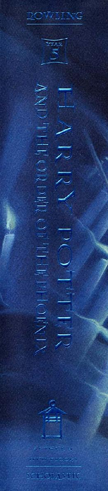
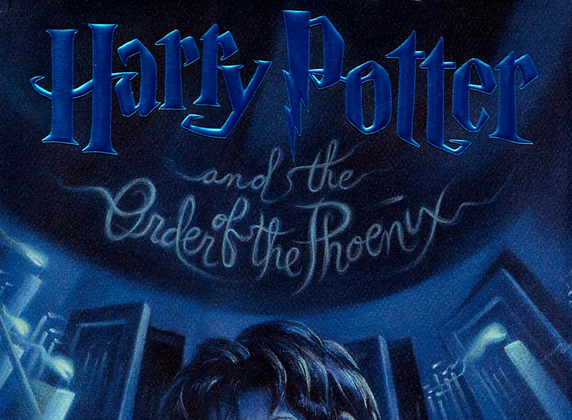
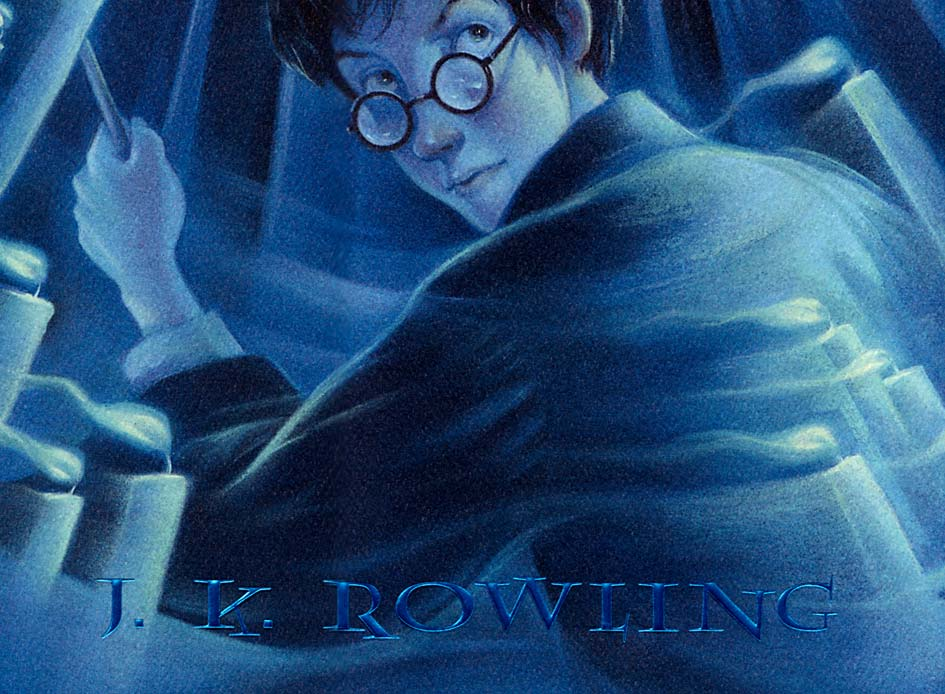
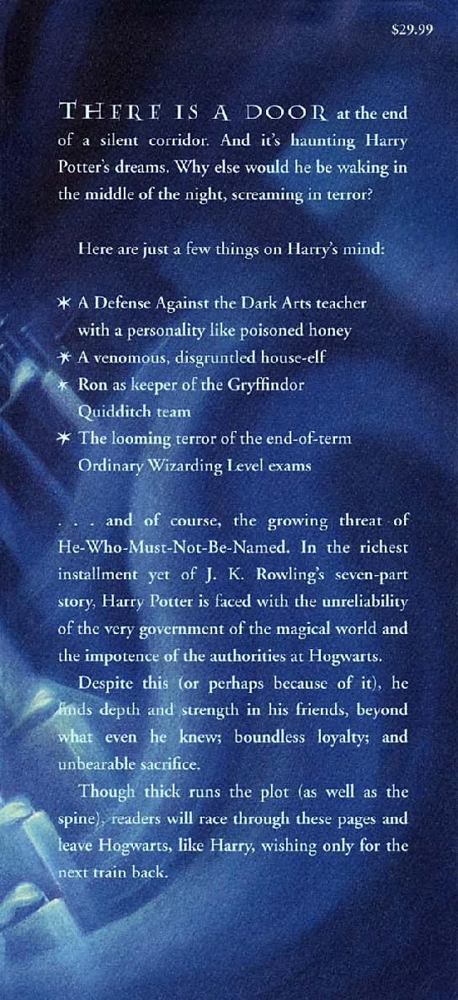
Harry Potter
AND THE ORDER OF THE PHOENIX
also by j. k. rowling
Harry Potter and the Sorcerer’s Stone
Year One at Hogwarts
Harry Potter and the Chamber of Secrets
Year Two at Hogwarts
Harry Potter and the Prisoner of Azkaban
Year Three at Hogwarts
Harry Potter and the Goblet of Fire
Year Four at Hogwarts
Harry Potter and the Order of the Phoenix Year Five at Hogwarts
Harry Potter and the Half-Blood Prince
Year Six at Hogwarts
Harry Potter and the Deathly Hallows
Year Seven at Hogwarts
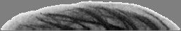


Harry Potter
and the Order of the Phoenix
BY
J. K. Rowling
ILLUSTRATIONS BY Mary GrandPré
ARTHUR A. LEVINE BOOKS
AN IMPRINT OF SCHOLASTIC Press.
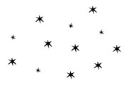
To Neil, Jessica, and David,
who make my world magical.
Text copyright © 2003 by J. K. Rowling
Illustrations by Mary Grandpré copyright © 2003 by Warner Bros.
harry potter, characters, names and related indicia are trademarks of and © Warner Bros. Harry Potter Publishing Rights © J. K. Rowling.
All rights reserved. Published by Scholastic Press, a division of Scholastic Inc., Publishers since 1920.
scholastic, scholastic press, and the lantern logo are trademarks and/or registered trademarks of Scholastic Inc.
No part of this publication may be reproduced, or stored in a retrieval system, or transmitted in any form or by any means, electronic, mechanical, photocopying, recording, or otherwise, without written permission of the publisher. For information regarding permission, write to Scholastic Inc., Attention: Permissions Department, 557 Broadway, New York, NY 10012.
Library of Congress Cataloging-in-Publication Data Available Library of Congress Control Number: 2003102525
ISBN 0-439-35806-X
10 9 8 03 04 05 06 07
Printed in the U.S.A. 37
Second edition, August 2003
Contents
ONE
TWO
THREE
FOUR
Number Twelve, Grimmauld Place · 59
FIVE
SIX
The Noble and Most Ancient House of Black · 98
SEVEN
EIGHT
vii
NINE
The Woes of Mrs. Weasley · 152
TEN
ELEVEN
The Sorting Hat’s New Song · 200
TWELVE
THIRTEEN
FOURTEEN
FIFTEEN
The Hogwarts High Inquisitor · 306
SIXTEEN
SEVENTEEN
Educational Decree Number Twenty-Four · 350
viii
EIGHTEEN
NINETEEN
The Lion and the Serpent · 397
TWENTY
TWENTY-ONE
TWENTY-TWO
St. Mungo’s Hospital for Magical
TWENTY-Three
Christmas on the Closed Ward · 492
TWENTY-FOUR
TWENTY-FIVE
TWENTY-SIX
ix
TWENTY-SEVEN
The Centaur and the Sneak · 599
TWENTY-EIGHT
TWENTY-NINE
THIRTY
THIRTY-ONE
THIRTY-TWO
THIRTY-THREE
THIRTY-FOUR
The Department of Mysteries · 764
THIRTY-FIVE
x
THIRTY-SIX
The Only One He Ever Feared · 807
THIRTY-SEVEN
THIRTY-EIGHT
xi
Harry Potter
And the Order OF Phoenix
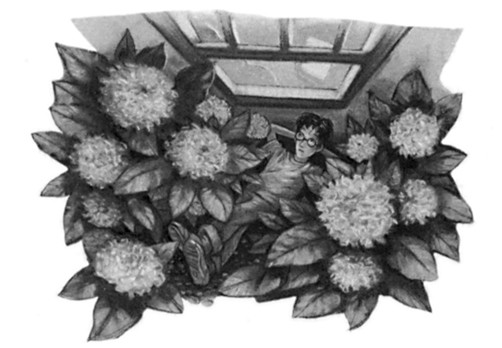
C H A P T E R O N E
DUDLEY DEMENTED
he hottest day of the summer so far was drawing to a close and T a drowsy silence lay over the large, square houses of Privet Drive. Cars that were usually gleaming stood dusty in their drives and lawns that were once emerald green lay parched and yellowing; the use of hosepipes had been banned due to drought. Deprived of their usual car-washing and lawn-mowing pursuits, the inhabitants of Privet Drive had retreated into the shade of their cool houses, windows thrown wide in the hope of tempting in a nonexistent breeze. The only person left outdoors was a teenage boy who was lying flat on his back in a flower bed outside number four.
He was a skinny, black-haired, bespectacled boy who had the pinched, slightly unhealthy look of someone who has grown a lot in a short space of time. His jeans were torn and dirty, his T-shirt baggy and faded, and the soles of his trainers were peeling away from the uppers. Harry Potter’s appearance did not endear him to the neighbors, who were the sort of people who thought scruffiness ought to be pun-ishable by law, but as he had hidden himself behind a large hydrangea bush this evening he was quite invisible to passersby. In fact, the only
1
CHAPTER ONE
way he would be spotted was if his Uncle Vernon or Aunt Petunia stuck their heads out of the living room window and looked straight down into the flower bed below.
On the whole, Harry thought he was to be congratulated on his idea of hiding here. He was not, perhaps, very comfortable lying on the hot, hard earth, but on the other hand, nobody was glaring at him, grinding their teeth so loudly that he could not hear the news, or shooting nasty questions at him, as had happened every time he had tried sitting down in the living room and watching television with his aunt and uncle.
Almost as though this thought had fluttered through the open window, Vernon Dursley, Harry’s uncle, suddenly spoke. “Glad to see the boy’s stopped trying to butt in. Where is he anyway?”
“I don’t know,” said Aunt Petunia unconcernedly. “Not in the house.”
Uncle Vernon grunted.
“Watching the news . . .” he said scathingly. “I’d like to know what he’s real y up to. As if a normal boy cares what’s on the news — Dudley hasn’t got a clue what’s going on, doubt he knows who the Prime Minister is! Anyway, it’s not as if there’d be anything about his lot on our news —”
“Vernon, shh!” said Aunt Petunia. “The window’s open!”
“Oh — yes — sorry, dear . . .”
The Dursleys fell silent. Harry listened to a jingle about Fruit ’N
Bran breakfast cereal while he watched Mrs. Figg, a batty, cat-loving old lady from nearby Wisteria Walk, amble slowly past. She was frowning and muttering to herself. Harry was very pleased that he was concealed behind the bush; Mrs. Figg had recently taken to asking him around for tea whenever she met him in the street. She had rounded the corner and vanished from view before Uncle Vernon’s voice floated out of the window again.
2
DUDLEY DEMENTED
“Dudders out for tea?”
“At the Polkisses’,” said Aunt Petunia fondly. “He’s got so many little friends, he’s so popular . . .”
Harry repressed a snort with difficulty. The Dursleys really were astonishingly stupid about their son, Dudley; they had swallowed all his dim-witted lies about having tea with a different member of his gang every night of the summer holidays. Harry knew perfectly well that Dudley had not been to tea anywhere; he and his gang spent every evening vandalizing the play park, smoking on street corners, and throwing stones at passing cars and children. Harry had seen them at it during his evening walks around Little Whinging; he had spent most of the holidays wandering the streets, scavenging newspapers from bins along the way.
The opening notes of the music that heralded the seven o’clock news reached Harry’s ears and his stomach turned over. Perhaps tonight — after a month of waiting — would be the night —
“Record numbers of stranded holidaymakers fill airports as the Spanish baggage-handlers’ strike reaches its second week —”
“Give ’em a lifelong siesta, I would,” snarled Uncle Vernon over the end of the newsreader’s sentence, but no matter: Outside in the flower bed, Harry’s stomach seemed to unclench. If anything had happened, it would surely have been the first item on the news; death and destruction were more important than stranded holidaymakers. . . .
He let out a long, slow breath and stared up at the brilliant blue sky.
Every day this summer had been the same: the tension, the expectation, the temporary relief, and then mounting tension again . . . and always, growing more insistent all the time, the question of why nothing had happened yet. . . .
He kept listening, just in case there was some small clue, not recognized for what it really was by the Muggles — an unexplained disappearance, perhaps, or some strange accident . . . but the
3
CHAPTER ONE
baggage-handlers’ strike was followed by news on the drought in the Southeast (“I hope he’s listening next door!” bellowed Uncle Vernon,
“with his sprinklers on at three in the morning!”); then a helicopter that had almost crashed in a field in Surrey, then a famous actress’s di-vorce from her famous husband (“as if we’re interested in their sordid affairs,” sniffed Aunt Petunia, who had followed the case obsessively in every magazine she could lay her bony hands on).
Harry closed his eyes against the now blazing evening sky as the newsreader said, “And finally, Bungy the budgie has found a novel way of keeping cool this summer. Bungy, who lives at the Five Feathers in Barnsley, has learned to water-ski! Mary Dorkins went to find out more. . . .”
Harry opened his eyes again. If they had reached water-skiing budgerigars, there was nothing else worth hearing. He rolled cautiously onto his front and raised himself onto his knees and elbows, preparing to crawl out from under the window.
He had moved about two inches when several things happened in very quick succession.
A loud, echoing crack broke the sleepy silence like a gunshot; a cat streaked out from under a parked car and flew out of sight; a shriek, a bellowed oath, and the sound of breaking china came from the Dursleys’ living room, and as though Harry had been waiting for this signal, he jumped to his feet, at the same time pulling from the waist-band of his jeans a thin wooden wand as if he were unsheathing a sword. But before he could draw himself up to full height, the top of his head collided with the Dursleys’ open window, and the resultant crash made Aunt Petunia scream even louder.
Harry felt as if his head had been split in two; eyes streaming, he swayed, trying to focus on the street and spot the source of the noise, but he had barely staggered upright again when two large purple hands reached through the open window and closed tightly around his throat.
4
DUDLEY DEMENTED
“Put — it — away!” Uncle Vernon snarled into Harry’s ear. “Now!
Before — anyone — sees!”
“Get — off — me!” Harry gasped; for a few seconds they struggled, Harry pulling at his uncle’s sausage-like fingers with his left hand, his right maintaining a firm grip on his raised wand. Then, as the pain in the top of Harry’s head gave a particularly nasty throb, Uncle Vernon yelped and released Harry as though he had received an electric shock — some invisible force seemed to have surged through his nephew, making him impossible to hold.
Panting, Harry fell forward over the hydrangea bush, straightened up, and stared around. There was no sign of what had caused the loud cracking noise, but there were several faces peering through various nearby windows. Harry stuffed his wand hastily back into his jeans and tried to look innocent.
“Lovely evening!” shouted Uncle Vernon, waving at Mrs. Number Seven, who was glaring from behind her net curtains. “Did you hear that car backfire just now? Gave Petunia and me quite a turn!”
He continued to grin in a horrible, manic way until al the curious neighbors had disappeared from their various windows, then the grin became a grimace of rage as he beckoned Harry back toward him.
Harry moved a few steps closer, taking care to stop just short of the point at which Uncle Vernon’s outstretched hands could resume their strangling.
“What the devil do you mean by it, boy?” asked Uncle Vernon in a croaky voice that trembled with fury.
“What do I mean by what?” said Harry coldly. He kept looking left and right up the street, still hoping to see the person who had made the cracking noise.
“Making a racket like a starting pistol right outside our —”
“I didn’t make that noise,” said Harry firmly.
Aunt Petunia’s thin, horsey face now appeared beside Uncle Vernon’s wide, purple one. She looked livid.
5
CHAPTER ONE
“Why were you lurking under our window?”
“Yes — yes, good point, Petunia! What were you doing under our window, boy?”
“Listening to the news,” said Harry in a resigned voice.
His aunt and uncle exchanged looks of outrage.
“Listening to the news! Again?”
“Well, it changes every day, you see,” said Harry.
“Don’t you be clever with me, boy! I want to know what you’re really up to — and don’t give me any more of this listening to the news tosh! You know perfectly well that your lot . . .”
“Careful, Vernon!” breathed Aunt Petunia, and Uncle Vernon lowered his voice so that Harry could barely hear him, “. . . that your lot don’t get on our news!”
“That’s all you know,” said Harry.
The Dursleys goggled at him for a few seconds, then Aunt Petunia said, “You’re a nasty little liar. What are all those —” she too lowered her voice so that Harry had to lip-read the next word, “— owls —
doing if they’re not bringing you news?”
“Aha!” said Uncle Vernon in a triumphant whisper. “Get out of that one, boy! As if we didn’t know you get all your news from those pesti-lential birds!”
Harry hesitated for a moment. It cost him something to tell the truth this time, even though his aunt and uncle could not possibly know how bad Harry felt at admitting it.
“The owls . . . aren’t bringing me news,” said Harry tonelessly.
“I don’t believe it,” said Aunt Petunia at once.
“No more do I,” said Uncle Vernon forcefully.
“We know you’re up to something funny,” said Aunt Petunia.
“We’re not stupid, you know,” said Uncle Vernon.
“Well, that’s news to me,” said Harry, his temper rising, and before the Dursleys could call him back, he had wheeled about, crossed the
6
DUDLEY DEMENTED
front lawn, stepped over the low garden wall, and was striding off up the street.
He was in trouble now and he knew it. He would have to face his aunt and uncle later and pay the price for his rudeness, but he did not care very much just at the moment; he had much more pressing matters on his mind.
Harry was sure that the cracking noise had been made by someone Apparating or Disapparating. It was exactly the sound Dobby the house-elf made when he vanished into thin air. Was it possible that Dobby was here in Privet Drive? Could Dobby be following him right at this very moment? As this thought occurred he wheeled around and stared back down Privet Drive, but it appeared to be completely deserted again and Harry was sure that Dobby did not know how to become invisible. . . .
He walked on, hardly aware of the route he was taking, for he had pounded these streets so often lately that his feet carried him to his favorite haunts automatically. Every few steps he glanced back over his shoulder. Someone magical had been near him as he lay among Aunt Petunias dying begonias, he was sure of it. Why hadn’t they spoken to him, why hadn’t they made contact, why were they hiding now?
And then, as his feeling of frustration peaked, his certainty leaked away.
Perhaps it hadn’t been a magical sound after all. Perhaps he was so desperate for the tiniest sign of contact from the world to which he belonged that he was simply overreacting to perfectly ordinary noises.
Could he be sure it hadn’t been the sound of something breaking inside a neighbor’s house?
Harry felt a dull, sinking sensation in his stomach and, before he knew it, the feeling of hopelessness that had plagued him all summer rolled over him once again. . . .
Tomorrow morning he would be awoken by the alarm at five
7
CHAPTER ONE
o’clock so that he could pay the owl that delivered the Daily Prophet — but was there any point in continuing to take it? Harry merely glanced at the front page before throwing it aside these days; when the idiots who ran the paper finally realized that Voldemort was back it would be headline news, and that was the only kind Harry cared about.
If he was lucky, there would also be owls carrying letters from his best friends, Ron and Hermione, though any expectation he had had that their letters would bring him news had long since been dashed.
“We can’t say much about you-know-what, obviously. . . .” “We’ve been told not to say anything important in case our letters go astray. . . .”
“We’re quite busy but I can’t give you details here. . . .” “There’s a fair amount going on, we’ll tell you everything when we see you. . . .”
But when were they going to see him? Nobody seemed too bothered with a precise date. Hermione had scribbled, “I expect we’ll be seeing you quite soon” inside his birthday card, but how soon was soon? As far as Harry could tell from the vague hints in their letters, Hermione and Ron were in the same place, presumably at Ron’s parents’ house.
He could hardly bear to think of the pair of them having fun at the Burrow when he was stuck in Privet Drive. In fact, he was so angry at them that he had thrown both their birthday presents of Honeydukes chocolates away unopened, though he had regretted this after eating the wilting salad Aunt Petunia had provided for dinner that night.
And what were Ron and Hermione busy with? Why wasn’t he, Harry, busy? Hadn’t he proved himself capable of handling much more than they? Had they all forgotten what he had done? Hadn’t it been he who had entered that graveyard and watched Cedric being murdered and been tied to that tombstone and nearly killed . . . ?
Don’t think about that, Harry told himself sternly for the hundredth time that summer. It was bad enough that he kept revisiting the graveyard in his nightmares, without dwelling on it in his waking moments too.
8
DUDLEY DEMENTED
He turned a corner into Magnolia Crescent; halfway along he passed the narrow alleyway down the side of a garage where he had first clapped eyes on his godfather. Sirius, at least, seemed to understand how Harry was feeling; admittedly his letters were just as empty of proper news as Ron and Hermione’s, but at least they contained words of caution and consolation instead of tantalizing hints:
“I know this must be frustrating for you. . . .” “Keep your nose clean and everything will be okay. . . .” “Be careful and don’t do anything rash. . . .”
Well, thought Harry, as he crossed Magnolia Crescent, turned into Magnolia Road, and headed toward the darkening play park, he had (by and large) done as Sirius advised; he had at least resisted the temptation to tie his trunk to his broomstick and set off for the Burrow by himself. In fact Harry thought his behavior had been very good considering how frustrated and angry he felt at being stuck in Privet Drive this long, reduced to hiding in flower beds in the hope of hearing something that might point to what Lord Voldemort was doing.
Nevertheless, it was quite galling to be told not to be rash by a man who had served twelve years in the wizard prison, Azkaban, escaped, attempted to commit the murder he had been convicted for in the first place, then gone on the run with a stolen hippogriff. . . .
Harry vaulted over the locked park gate and set off across the parched grass. The park was as empty as the surrounding streets.
When he reached the swings he sank onto the only one that Dudley and his friends had not yet managed to break, coiled one arm around the chain, and stared moodily at the ground. He would not be able to hide in the Dursleys’ flower bed again. Tomorrow he would have to think of some fresh way of listening to the news. In the meantime, he had nothing to look forward to but another restless, disturbed night, because even when he escaped nightmares about Cedric he had unsettling dreams about long dark corridors, all finishing in dead ends and locked doors, which he supposed had something to do with the
9
CHAPTER ONE
trapped feeling he had when he was awake. Often the old scar on his forehead prickled uncomfortably, but he did not fool himself that Ron or Hermione or Sirius would find that very interesting anymore. . . . In the past his scar hurting had warned that Voldemort was getting stronger again, but now that Voldemort was back they would probably remind him that its regular irritation was only to be expected. . . . Nothing to worry about . . . old news . . .
The injustice of it all welled up inside him so that he wanted to yel with fury. If it hadn’t been for him, nobody would even have known Voldemort was back! And his reward was to be stuck in Little Whinging for four solid weeks, completely cut off from the magical world, reduced to squatting among dying begonias so that he could hear about water-skiing budgerigars! How could Dumbledore have forgotten him so easily? Why had Ron and Hermione got together without inviting him along too? How much longer was he supposed to endure Sirius telling him to sit tight and be a good boy; or resist the temptation to write to the stupid Daily Prophet and point out that Voldemort had returned? These furious thoughts whirled around in Harry’s head, and his insides writhed with anger as a sultry, velvety night fell around him, the air full of the smell of warm, dry grass and the only sound that of the low grumble of traffic on the road beyond the park railings.
He did not know how long he had sat on the swing before the sound of voices interrupted his musings and he looked up. The streetlamps from the surrounding roads were casting a misty glow strong enough to silhouette a group of people making their way across the park. One of them was singing a loud, crude song. The others were laughing. A soft ticking noise came from several expensive racing bikes that they were wheeling along.
Harry knew who those people were. The figure in front was unmistakably his cousin, Dudley Dursley, wending his way home, accompanied by his faithful gang.
10
DUDLEY DEMENTED
Dudley was as vast as ever, but a year’s hard dieting and the discovery of a new talent had wrought quite a change in his physique. As Uncle Vernon delightedly told anyone who would listen, Dudley had recently become the Junior Heavyweight Inter-School Boxing Champion of the Southeast. “The noble sport,” as Uncle Vernon called it, had made Dudley even more formidable than he had seemed to Harry in the primary school days when he had served as Dudley’s first punching bag. Harry was not remotely afraid of his cousin anymore but he stil didn’t think that Dudley learning to punch harder and more accurately was cause for celebration. Neighborhood children all around were terrified of him — even more terrified than they were of
“that Potter boy,” who, they had been warned, was a hardened hooli-gan who attended St. Brutus’s Secure Center for Incurably Criminal Boys.
Harry watched the dark figures crossing the grass and wondered whom they had been beating up tonight. Look round, Harry found himself thinking as he watched them. Come on . . . look round . . . I’m sitting here all alone. . . . Come and have ago. . . .
If Dudley’s friends saw him sitting here, they would be sure to make a beeline for him, and what would Dudley do then? He wouldn’t want to lose face in front of the gang, but he’d be terrified of provoking Harry. . . . It would be really fun to watch Dudley’s dilemma; to taunt him, watch him, with him powerless to respond
. . . and if any of the others tried hitting Harry, Harry was ready — he had his wand . . . let them try . . . He’d love to vent some of his frustration on the boys who had once made his life hell —
But they did not turn around, they did not see him, they were almost at the railings. Harry mastered the impulse to call after them.
. . . Seeking a fight was not a smart move. . . . He must not use magic. . . . He would be risking expulsion again. . . .
Dudley’s gang’s voices died; they were out of sight, heading along Magnolia Road.
11
CHAPTER ONE
There you go, Sirius, Harry thought dully. Nothing rash. Kept my nose clean. Exactly the opposite of what you’d have done . . .
He got to his feet and stretched. Aunt Petunia and Uncle Vernon seemed to feel that whenever Dudley turned up was the right time to be home, and anytime after that was much too late. Uncle Vernon had threatened to lock Harry in the shed if he came home after Dudley again, so, stifling a yawn, still scowling, Harry set off toward the park gate.
Magnolia Road, like Privet Drive, was full of large, square houses with perfectly manicured lawns, all owned by large, square owners who drove very clean cars similar to Uncle Vernon’s. Harry preferred Little Whinging by night, when the curtained windows made patches of jewel-bright colors in the darkness and he ran no danger of hearing disapproving mutters about his “delinquent” appearance when he passed the householders. He walked quickly, so that halfway along Magnolia Road Dudley’s gang came into view again; they were saying their farewells at the entrance to Magnolia Crescent. Harry stepped into the shadow of a large lilac tree and waited.
“. . . squealed like a pig, didn’t he?” Malcolm was saying, to guffaws from the others.
“Nice right hook, Big D,” said Piers.
“Same time tomorrow?” said Dudley.
“Round at my place, my parents are out,” said Gordon.
“See you then,” said Dudley.
“Bye Dud!”
“See ya, Big D!”
Harry waited for the rest of the gang to move on before setting off again. When their voices had faded once more he headed around the corner into Magnolia Crescent and by walking very quickly he soon came within hailing distance of Dudley, who was strolling along at his ease, humming tunelessly.
“Hey, Big D!”
12
DUDLEY DEMENTED
Dudley turned.
“Oh,” he grunted. “It’s you.”
“How long have you been ‘Big D’ then?” said Harry.
“Shut it,” snarled Dudley, turning away again.
“Cool name,” said Harry, grinning and falling into step beside his cousin. “But you’ll always be Ickle Diddykins to me.”
“I said, SHUT IT!” said Dudley, whose ham-like hands had curled into fists.
“Don’t the boys know that’s what your mum calls you?”
“Shut your face.”
“You don’t tell her to shut her face. What about ‘popkin’ and
‘Dinky Diddydums,’ can I use them then?”
Dudley said nothing. The effort of keeping himself from hitting Harry seemed to be demanding all his self-control.
“So who’ve you been beating up tonight?” Harry asked, his grin fading. “Another ten-year-old? I know you did Mark Evans two nights ago —”
“He was asking for it,” snarled Dudley.
“Oh yeah?”
“He cheeked me.”
“Yeah? Did he say you look like a pig that’s been taught to walk on its hind legs? ’Cause that’s not cheek, Dud, that’s true . . .”
A muscle was twitching in Dudley’s jaw. It gave Harry enormous satisfaction to know how furious he was making Dudley; he felt as though he was siphoning off his own frustration into his cousin, the only outlet he had.
They turned right down the narrow alleyway where Harry had first seen Sirius and which formed a shortcut between Magnolia Crescent and Wisteria Walk. It was empty and much darker than the streets it linked because there were no streetlamps. Their footsteps were muffled between garage walls on one side and a high fence on the other.
13
CHAPTER ONE
“Think you’re a big man carrying that thing, don’t you?” Dudley said after a few seconds.
“What thing?”
“That — that thing you’re hiding.”
Harry grinned again.
“Not as stupid as you look, are you, Dud? But I s’pose if you were, you wouldn’t be able to walk and talk at the same time. . . .”
Harry pulled out his wand. He saw Dudley look sideways at it.
“You’re not allowed,” Dudley said at once. “I know you’re not.
You’d get expelled from that freak school you go to.”
“How d’you know they haven’t changed the rules, Big D?”
“They haven’t,” said Dudley, though he didn’t sound completely convinced. Harry laughed softly.
“You haven’t got the guts to take me on without that thing, have you?” Dudley snarled.
“Whereas you just need four mates behind you before you can beat up a ten-year-old. You know that boxing title you keep banging on about? How old was your opponent? Seven? Eight?”
“He was sixteen for your information,” snarled Dudley, “and he was out cold for twenty minutes after I’d finished with him and he was twice as heavy as you. You just wait till I tell Dad you had that thing out —”
“Running to Daddy now, are you? Is his ickle boxing champ frightened of nasty Harry’s wand?”
“Not this brave at night, are you?” sneered Dudley.
“This is night, Diddykins. That’s what we call it when it goes all dark like this.”
“I mean when you’re in bed!” Dudley snarled.
He had stopped walking. Harry stopped too, staring at his cousin.
From the little he could see of Dudley’s large face, he was wearing a strangely triumphant look.
“What d’you mean, I’m not brave in bed?” said Harry, completely
14
DUDLEY DEMENTED
nonplussed. “What — am I supposed to be frightened of pillows or something?”
“I heard you last night,” said Dudley breathlessly. “Talking in your sleep. Moaning.”
“What d’you mean?” Harry said again, but there was a cold, plunging sensation in his stomach. He had revisited the graveyard last night in his dreams.
Dudley gave a harsh bark of laughter then adopted a high-pitched, whimpering voice. “ ‘Don’t kill Cedric! Don’t kill Cedric!’ Who’s Cedric — your boyfriend?”
“I — you’re lying —” said Harry automatically. But his mouth had gone dry. He knew Dudley wasn’t lying — how else would he know about Cedric?
“ ‘Dad! Help me, Dad! He’s going to kill me, Dad! Boo-hoo!’ ”
“Shut up,” said Harry quietly. “Shut up, Dudley, I’m warning you!”
“ ‘Come and help me, Dad! Mum, come and help me! He’s killed Cedric! Dad, help me! He’s going to —’ Don’t you point that thing at me!”
Dudley backed into the alley wall. Harry was pointing the wand directly at Dudley’s heart. Harry could feel fourteen years’ hatred of Dudley pounding in his veins — what wouldn’t he give to strike now, to jinx Dudley so thoroughly he’d have to crawl home like an insect, struck dumb, sprouting feelers —
“Don’t ever talk about that again,” Harry snarled. “D’you understand me?”
“Point that thing somewhere else!”
“I said, do you understand me?”
“Point it somewhere else!”
“DO YOU UNDERSTAND ME?”
“GET THAT THING AWAY FROM —”
Dudley gave an odd, shuddering gasp, as though he had been doused in icy water.
15
CHAPTER ONE
Something had happened to the night. The star-strewn indigo sky was suddenly pitch-black and lightless — the stars, the moon, the misty streetlamps at either end of the alley had vanished. The distant grumble of cars and the whisper of trees had gone. The balmy evening was suddenly piercingly, bitingly cold. They were surrounded by total, impenetrable, silent darkness, as though some giant hand had dropped a thick, icy mantle over the entire alleyway, blinding them.
For a split second Harry thought he had done magic without meaning to, despite the fact that he’d been resisting as hard as he could — then his reason caught up with his senses — he didn’t have the power to turn off the stars. He turned his head this way and that, trying to see something, but the darkness pressed on his eyes like a weightless veil.
Dudley’s terrified voice broke in Harry’s ear.
“W-what are you d-doing? St-stop it!”
“I’m not doing anything! Shut up and don’t move!”
“I c-can’t see! I’ve g-gone blind! I —”
“I said shut up!”
Harry stood stock-still, turning his sightless eyes left and right. The cold was so intense that he was shivering all over; goose bumps had erupted up his arms, and the hairs on the back of his neck were standing up — he opened his eyes to their fullest extent, staring blankly around, unseeing . . .
It was impossible. . . . They couldn’t be here. . . . Not in Little Whinging . . . He strained his ears. . . . He would hear them before he saw them. . . .
“I’ll t-tell Dad!” Dudley whimpered. “W-where are you? What are you d-do — ?”
“Will you shut up?” Harry hissed, “I’m trying to lis —”
But he fell silent. He had heard just the thing he had been dreading.
There was something in the alleyway apart from themselves, some-
16
DUDLEY DEMENTED
thing that was drawing long, hoarse, rattling breaths. Harry felt a horrible jolt of dread as he stood trembling in the freezing air.
“C-cut it out! Stop doing it! I’ll h-hit you, I swear I will!”
“Dudley, shut —”
WHAM !
A fist made contact with the side of Harry’s head, lifting Harry off his feet. Small white lights popped in front of Harry’s eyes; for the second time in an hour he felt as though his head had been cleaved in two; next moment he had landed hard on the ground, and his wand had flown out of his hand.
“You moron, Dudley!” Harry yelled, his eyes watering with pain, as he scrambled to his hands and knees, now feeling around frantically in the blackness. He heard Dudley blundering away, hitting the alley fence, stumbling.
“DUDLEY, COME BACK! YOU’RE RUNNING RIGHT AT
IT!”
There was a horrible squealing yell, and Dudley’s footsteps stopped. At the same moment, Harry felt a creeping chill behind him that could mean only one thing. There was more than one.
“DUDLEY, KEEP YOUR MOUTH SHUT! WHATEVER YOU
DO, KEEP YOUR MOUTH SHUT! Wand!” Harry muttered frantically, his hands flying over the ground like spiders. “Where’s — wand
— come on — Lumos!”
He said the spell automatically, desperate for light to help him in his search — and to his disbelieving relief, light flared inches from his right hand — the wand tip had ignited. Harry snatched it up, scrambled to his feet, and turned around.
His stomach turned over.
A towering, hooded figure was gliding smoothly toward him, hovering over the ground, no feet or face visible beneath its robes, sucking on the night as it came.
Stumbling backward, Harry raised his wand.
17
CHAPTER ONE
“Expecto Patronum!”
A silvery wisp of vapor shot from the tip of the wand and the dementor slowed, but the spell hadn’t worked properly; tripping over his feet, Harry retreated farther as the dementor bore down upon him, panic fogging his brain — concentrate —
A pair of gray, slimy, scabbed hands slid from inside the dementor’s robes, reaching for him. A rushing noise filled Harry’s ears.
“Expecto Patronum!”
His voice sounded dim and distant. . . . Another wisp of silver smoke, feebler than the last, drifted from the wand — he couldn’t do it anymore, he couldn’t work the spell —
There was laughter inside his own head, shrill, high-pitched laughter. . . . He could smell the dementor’s putrid, death-cold breath, filling his own lungs, drowning him — Think . . . something happy. . . .
But there was no happiness in him. . . . The dementor’s icy fingers were closing on his throat — the high-pitched laughter was growing louder and louder, and a voice spoke inside his head — “Bow to death, Harry. . . . It might even be painless. . . . I would not know. . . . I have never died. . . .”
He was never going to see Ron and Hermione again —
And their faces burst clearly into his mind as he fought for breath —
“EXPECTO PATRONUM!”
An enormous silver stag erupted from the tip of Harry’s wand; its antlers caught the dementor in the place where the heart should have been; it was thrown backward, weightless as darkness, and as the stag charged, the dementor swooped away, batlike and defeated.
“THIS WAY!” Harry shouted at the stag. Wheeling around, he sprinted down the alleyway, holding the lit wand aloft. “DUDLEY?
DUDLEY!”
He had run barely a dozen steps when he reached them: Dudley was curled on the ground, his arms clamped over his face; a second de-
18
DUDLEY DEMENTED
mentor was crouching low over him, gripping his wrists in its slimy hands, prizing them slowly, almost lovingly apart, lowering its hooded head toward Dudley’s face as though about to kiss him. . . .
“GET IT!” Harry bellowed, and with a rushing, roaring sound, the silver stag he had conjured came gal oping back past him. The dementor’s eyeless face was barely an inch from Dudley’s when the silver antlers caught it; the thing was thrown up into the air and, like its fellow, it soared away and was absorbed into the darkness. The stag cantered to the end of the alleyway and dissolved into silver mist.
Moon, stars, and streetlamps burst back into life. A warm breeze swept the alleyway. Trees rustled in neighboring gardens and the mun-dane rumble of cars in Magnolia Crescent filled the air again. Harry stood quite still, all his senses vibrating, taking in the abrupt return to normality. After a moment he became aware that his T-shirt was sticking to him; he was drenched in sweat.
He could not believe what had just happened. Dementors here, in Little Whinging . . .
Dudley lay curled up on the ground, whimpering and shaking.
Harry bent down to see whether he was in a fit state to stand up, but then heard loud, running footsteps behind him; instinctively raising his wand again, he spun on his heel to face the newcomer.
Mrs. Figg, their batty old neighbor, came panting into sight. Her grizzled gray hair was escaping from its hairnet, a clanking string shopping bag was swinging from her wrist, and her feet were halfway out of her tartan carpet slippers. Harry made to stow his wand hurriedly out of sight, but —
“Don’t put it away, idiot boy!” she shrieked. “What if there are more of them around? Oh, I’m going to kill Mundungus Fletcher!”
19
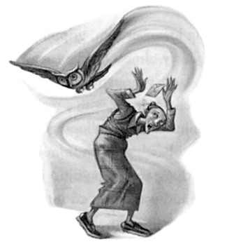
C H A P T E R T W O
A PECK OF OWLS
hat?” said Harry blankly.
W “He left!” said Mrs. Figg, wringing her hands. “Left to see someone about a batch of cauldrons that fell off the back of a broom!
I told him I’d flay him alive if he went, and now look! Dementors! It’s just lucky I put Mr. Tibbies on the case! But we haven’t got time to stand around! Hurry, now, we’ve got to get you back! Oh, the trouble this is going to cause! I will kill him!”
“But —”
The revelation that his batty old cat-obsessed neighbor knew what dementors were was almost as big a shock to Harry as meeting two of them down the alleyway. “You’re — you’re a witch?”
“I’m a Squib, as Mundungus knows full well, so how on earth was I supposed to help you fight off dementors? He left you completely without cover when I warned him —”
“This bloke Mundungus has been following me? Hang on — it was him! He Disapparated from the front of my house!”
“Yes, yes, yes, but luckily I’d stationed Mr. Tibbies under a car just in case, and Mr. Tibbies came and warned me, but by the time I got
20
A PECK OF OWLS
to your house you’d gone — and now — oh, what’s Dumbledore going to say? You!” she shrieked at Dudley, still supine on the alley floor.
“Get your fat bottom off the ground, quick!”
“You know Dumbledore?” said Harry, staring at her.
“Of course I know Dumbledore, who doesn’t know Dumbledore?
But come on — I’l be no help if they come back, I’ve never so much as Transfigured a teabag —”
She stooped down, seized one of Dudley’s massive arms in her wiz-ened hands, and tugged.
“Get up, you useless lump, get up!”
But Dudley either could not or would not move. He was still on the ground, trembling and ashen-faced, his mouth shut very tight.
“I’ll do it.” Harry took hold of Dudley’s arm and heaved: With an enormous effort he managed to hoist Dudley to his feet. Dudley seemed to be on the point of fainting: His smal eyes were rolling in their sockets and sweat was beading his face; the moment Harry let go of him he swayed dangerously.
“Hurry up!” said Mrs. Figg hysterically.
Harry pulled one of Dudley’s massive arms around his own shoulders and dragged him toward the road, sagging slightly under his weight. Mrs. Figg tottered along in front of them, peering anxiously around the corner.
“Keep your wand out,” she told Harry, as they entered Wisteria Walk. “Never mind the Statute of Secrecy now, there’s going to be hell to pay anyway, we might as well be hanged for a dragon as an egg. Talk about the Reasonable Restriction of Underage Sorcery . . . This was exactly what Dumbledore was afraid of — what’s that at the end of the street? Oh, it’s just Mr. Prentice. . . . Don’t put your wand away, boy, don’t I keep telling you I’m no use?”
It was not easy to hold a wand steady and carry Dudley along at the same time. Harry gave his cousin an impatient dig in the ribs, but Dudley seemed to have lost all desire for independent movement. He
21
CHAPTER TWO
was slumped on Harry’s shoulder, his large feet dragging along the ground.
“Why didn’t you tell me you’re a Squib?” Harry asked Mrs. Figg, panting with the effort to keep walking. “All those times I came round your house — why didn’t you say anything?”
“Dumbledore’s orders. I was to keep an eye on you but not say anything, you were too young. I’m sorry I gave you such a miserable time, but the Dursleys would never have let you come if they’d thought you enjoyed it. It wasn’t easy, you know. . . . But oh my word,” she said tragically, wringing her hands once more, “when Dumbledore hears about this — how could Mundungus have left, he was supposed to be on duty until midnight — where is he? How am I going to tell Dumbledore what’s happened, I can’t Apparate —”
“I’ve got an owl, you can borrow her,” Harry groaned, wondering whether his spine was going to snap under Dudley’s weight.
“Harry, you don’t understand! Dumbledore will need to act as quickly as possible, the Ministry have their own ways of detecting underage magic, they’ll know already, you mark my words —”
“But I was getting rid of dementors, I had to use magic — they’re going to be more worried what dementors were doing floating around Wisteria Walk, surely?”
“Oh my dear, I wish it were so but I’m afraid — MUNDUNGUS
FLETCHER, I AM GOING TO KILL YOU!”
There was a loud crack and a strong smell of mingled drink and stale tobacco filled the air as a squat, unshaven man in a tattered overcoat materialized right in front of them. He had short bandy legs, long straggly ginger hair, and bloodshot baggy eyes that gave him the doleful look of a basset hound; he was also clutching a silvery bundle that Harry recognized at once as an Invisibility Cloak.
“ ’S’ up, Figgy?” he said, staring from Mrs. Figg to Harry and Dudley. “What ’appened to staying undercover?”
22
A PECK OF OWLS
“I’ll give you undercover!” cried Mrs. Figg. “Dementors, you useless, skiving sneak thief!”
“Dementors?” repeated Mundungus, aghast. “Dementors here?”
“Yes, here, you worthless pile of bat droppings, here!” shrieked Mrs. Figg. “Dementors attacking the boy on your watch!”
“Blimey,” said Mundungus weakly, looking from Mrs. Figg to Harry and back again. “Blimey, I . . .”
“And you off buying stolen cauldrons! Didn’t I tell you not to go?
Didn’t I ?”
“I — well, I —” Mundungus looked deeply uncomfortable. “It . . .
it was a very good business opportunity, see . . .”
Mrs. Figg raised the arm from which her string bag dangled and whacked Mundungus around the face and neck with it; judging by the clanking noise it made it was full of cat food.
“Ouch — gerroff — gerroff, you mad old bat! Someone’s gotta tell Dumbledore!”
“Yes — they — have!” yelled Mrs. Figg, still swinging the bag of cat food at every bit of Mundungus she could reach. “And — it —
had — better — be — you — and — you — can — tell — him —
why — you — weren’t — there — to — help!”
“Keep your ’airnet on!” said Mundungus, his arms over his head, cowering. “I’m going, I’m going!”
And with another loud crack, he vanished.
“I hope Dumbledore murders him!” said Mrs. Figg furiously. “Now come on, Harry, what are you waiting for?”
Harry decided not to waste his remaining breath on pointing out that he could barely walk under Dudley’s bulk. He gave the semicon-scious Dudley a heave and staggered onward.
“I’ll take you to the door,” said Mrs. Figg, as they turned into Privet Drive. “Just in case there are more of them around. . . . Oh my word, what a catastrophe . . . and you had to fight them off yourself . . . and
23
CHAPTER TWO
Dumbledore said we were to keep you from doing magic at all costs.
. . . Well, it’s no good crying over spilled potion, I suppose . . . but the cat’s among the pixies now . . .”
“So,” Harry panted, “Dumbledore’s . . . been having . . . me followed?”
“Of course he has,” said Mrs. Figg impatiently. “Did you expect him to let you wander around on your own after what happened in June? Good Lord, boy, they told me you were intelligent. . . . Right
. . . get inside and stay there,” she said as they reached number four. “I expect someone will be in touch with you soon enough.”
“What are you going to do?” asked Harry quickly.
“I’m going straight home,” said Mrs. Figg, staring around the dark street and shuddering. “I’ll need to wait for more instructions. Just stay in the house. Good night.”
“Hang on, don’t go yet! I want to know —”
But Mrs. Figg had already set off at a trot, carpet slippers flopping, string bag clanking.
“Wait!” Harry shouted after her; he had a million questions to ask anyone who was in contact with Dumbledore; but within seconds Mrs. Figg was swallowed by the darkness. Scowling, Harry readjusted Dudley on his shoulder and made his slow, painful way up number four’s garden path.
The hall light was on. Harry stuck his wand back inside the waist-band of his jeans, rang the bell, and watched Aunt Petunia’s outline grow larger and larger, oddly distorted by the rippling glass in the front door.
“Diddy! About time too, I was getting quite — quite — Diddy, what’s the matter?”
Harry looked sideways at Dudley and ducked out from under his arm just in time. Dudley swayed for a moment on the spot, his face pale green, then he opened his mouth at last and vomited all over the doormat.
24
A PECK OF OWLS
“DIDDY! Diddy, what’s the matter with you? Vernon? VERNON!”
Harry’s uncle came galumphing out of the living room, walrus mustache blowing hither and thither as it always did when he was agitated.
He hurried forward to help Aunt Petunia negotiate a weak-kneed Dudley over the threshold while avoiding stepping in the pool of sick.
“He’s ill, Vernon!”
“What is it, son? What’s happened? Did Mrs. Polkiss give you something foreign for tea?”
“Why are you all covered in dirt, darling? Have you been lying on the ground?”
“Hang on — you haven’t been mugged, have you, son?”
Aunt Petunia screamed.
“Phone the police, Vernon! Phone the police! Diddy, darling, speak to Mummy! What did they do to you?”
In all the kerfuffle, nobody seemed to have noticed Harry, which suited him perfectly. He managed to slip inside just before Uncle Vernon slammed the door and while the Dursleys made their noisy progress down the hall toward the kitchen, Harry moved carefully and quietly toward the stairs.
“Who did it, son? Give us names. We’ll get them, don’t worry.”
“Shh! He’s trying to say something, Vernon! What is it, Diddy? Tell Mummy!”
Harry’s foot was on the bottommost stair when Dudley found his voice.
“Him. ”
Harry froze, foot on the stair, face screwed up, braced for the explosion.
“BOY! COME HERE!”
With a feeling of mingled dread and anger, Harry removed his foot slowly from the stair and turned to follow the Dursleys.
The scrupulously clean kitchen had an oddly unreal glitter after the darkness outside. Aunt Petunia was ushering Dudley into a chair; he
25
CHAPTER TWO
was still very green and clammy looking. Uncle Vernon was standing in front of the draining board, glaring at Harry through tiny, narrowed eyes.
“What have you done to my son?” he said in a menacing growl.
“Nothing,” said Harry, knowing perfectly well that Uncle Vernon wouldn’t believe him.
“What did he do to you, Diddy?” Aunt Petunia said in a quavering voice, now sponging sick from the front of Dudley’s leather jacket.
“Was it — was it you-know-what, darling? Did he use — his thing?”
Slowly, tremulously, Dudley nodded.
“I didn’t!” Harry said sharply, as Aunt Petunia let out a wail and Uncle Vernon raised his fists. “I didn’t do anything to him, it wasn’t me, it was —”
But at that precise moment a screech owl swooped in through the kitchen window. Narrowly missing the top of Uncle Vernon’s head, it soared across the kitchen, dropped the large parchment envelope it was carrying in its beak at Harry’s feet, and turned gracefully, the tips of its wings just brushing the top of the fridge, then zoomed outside again and off across the garden.
“OWLS!” bellowed Uncle Vernon, the well-worn vein in his temple pulsing angrily as he slammed the kitchen window shut. “OWLS
AGAIN! I WILL NOT HAVE ANY MORE OWLS IN MY
HOUSE!”
But Harry was already ripping open the envelope and pulling out the letter inside, his heart pounding somewhere in the region of his Adam’s apple.
Dear Mr. Potter,
We have received intelligence that you performed the Patronus Charm at twenty-three minutes past nine this evening in a Muggle-inhabited area and in the presence of a Muggle.
The severity of this breach of the Decree for the Reason-
26
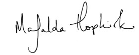
A PECK OF OWLS
able Restriction of Underage Sorcery has resulted in your expulsion from Hogwarts School of Witchcraft and Wizardry.
Ministry representatives will be calling at your place of residence shortly to destroy your wand.
As you have already received an official warning for a previous offense under section 13 of the International Confederation of Wizards’ Statute of Secrecy, we regret to inform you that your presence is required at a disciplinary hearing at the Ministry of Magic at 9 a.m. on August 12th.
Hoping you are well,
Yours sincerely,
improper use of magic office
Ministry of Magic
Harry read the letter through twice. He was only vaguely aware of Uncle Vernon and Aunt Petunia talking in the vicinity. Inside his head, all was icy and numb. One fact had penetrated his conscious-ness like a paralyzing dart. He was expelled from Hogwarts. It was all over. He was never going back.
He looked up at the Dursleys. Uncle Vernon was purple-faced, shouting, his fists still raised; Aunt Petunia had her arms around Dudley, who was retching again.
Harry’s temporarily stupefied brain seemed to reawaken. Ministry representatives will be calling at your place of residence shortly to destroy your wand. There was only one thing for it. He would have to run —
now. Where he was going to go, Harry didn’t know, but he was certain of one thing: At Hogwarts or outside it, he needed his wand. In an almost dreamlike state, he pulled his wand out and turned to leave the kitchen.
27
CHAPTER TWO
“Where d’you think you’re going?” yelled Uncle Vernon. When Harry didn’t reply, he pounded across the kitchen to block the doorway into the hall. “I haven’t finished with you, boy!”
“Get out of the way,” said Harry quietly.
“You’re going to stay here and explain how my son —”
“If you don’t get out of the way I’m going to jinx you,” said Harry, raising the wand.
“You can’t pull that one on me!” snarled Uncle Vernon. “I know you’re not allowed to use it outside that madhouse you call a school!”
“The madhouse has chucked me out,” said Harry. “So I can do whatever I like. You’ve got three seconds. One — two —”
A resounding CRACK filled the kitchen; Aunt Petunia screamed, Uncle Vernon yelled and ducked, but for the third time that night Harry was staring for the source of a disturbance he had not made. He spotted it at once: A dazed and ruffled-looking barn owl was sitting outside on the kitchen sill, having just collided with the closed window.
Ignoring Uncle Vernon’s anguished yell of “OWLS!” Harry crossed the room at a run and wrenched the window open again. The owl stuck out its leg, to which a small roll of parchment was tied, shook its feathers, and took off the moment Harry had pulled off the letter.
Hands shaking, Harry unfurled the second message, which was written very hastily and blotchily in black ink.
Harry —
Dumbledore’s just arrived at the Ministry, and he’s trying to sort it all out. DO NOT LEAVE YOUR AUNT AND
UNCLE’S HOUSE. DO NOT DO ANY MORE MAGIC.
DO NOT SURRENDER YOUR WAND.
28
A PECK OF OWLS
Dumbledore was trying to sort it all out. . . . What did that mean?
How much power did Dumbledore have to override the Ministry of Magic? Was there a chance that he might be allowed back to Hogwarts, then? A small shoot of hope burgeoned in Harry’s chest, almost immediately strangled by panic — how was he supposed to refuse to surrender his wand without doing magic? He’d have to duel with the Ministry representatives, and if he did that, he’d be lucky to escape Azkaban, let alone expulsion.
His mind was racing. . . . He could run for it and risk being captured by the Ministry, or stay put and wait for them to find him here.
He was much more tempted by the former course, but he knew that Mr. Weasley had his best interests at heart . . . and, after all, Dumbledore had sorted out much worse than this before. . . .
“Right,” Harry said, “I’ve changed my mind, I’m staying.”
He flung himself down at the kitchen table and faced Dudley and Aunt Petunia. The Dursleys appeared taken aback at his abrupt change of mind. Aunt Petunia glanced despairingly at Uncle Vernon.
The vein in Uncle Vernon’s purple temple was throbbing worse than ever.
“Who are all these ruddy owls from?” he growled.
“The first one was from the Ministry of Magic, expelling me,” said Harry calmly; he was straining his ears to catch noises outside in case the Ministry representatives were approaching, and it was easier and quieter to answer Uncle Vernon’s questions than to have him start raging and bellowing. “The second one was from my friend Ron’s dad, he works at the Ministry.”
“Ministry of Magic?” bellowed Uncle Vernon. “People like you in government? Oh this explains everything, everything, no wonder the country’s going to the dogs. . . .”
When Harry did not respond, Uncle Vernon glared at him, then spat, “And why have you been expelled?”
29
CHAPTER TWO
“Because I did magic.”
“AHA!” roared Uncle Vernon, slamming his fist down on the top of the fridge, which sprang open; several of Dudley’s low-fat snacks toppled out and burst on the floor. “So you admit it! What did you do to Dudley?”
“Nothing,” said Harry, slightly less calmly. “That wasn’t me —”
“Was,” muttered Dudley unexpectedly, and Uncle Vernon and Aunt Petunia instantly made flapping gestures at Harry to quiet him while they both bent low over Dudley.
“Go on, son,” said Uncle Vernon, “what did he do?”
“Tell us, darling,” whispered Aunt Petunia.
“Pointed his wand at me,” Dudley mumbled.
“Yeah, I did, but I didn’t use —” Harry began angrily, but . . .
“SHUT UP!” roared Uncle Vernon and Aunt Petunia in unison.
“Go on, son,” repeated Uncle Vernon, mustache blowing about furiously.
“All dark,” Dudley said hoarsely, shuddering. “Everything dark.
And then I h-heard . . . things. Inside m-my head . . .”
Uncle Vernon and Aunt Petunia exchanged looks of utter horror.
If their least favorite thing in the world was magic, closely followed by neighbors who cheated more than they did on the hosepipe ban, people who heard voices were definitely in the bottom ten. They obviously thought Dudley was losing his mind.
“What sort of things did you hear, popkin?” breathed Aunt Petunia, very white-faced and with tears in her eyes.
But Dudley seemed incapable of saying. He shuddered again and shook his large blond head, and despite the sense of numb dread that had settled on Harry since the arrival of the first owl, he felt a certain curiosity. Dementors caused a person to relive the worst moments of their life. . . . What would spoiled, pampered, bul ying Dudley have been forced to hear?
“How come you fell over, son?” said Uncle Vernon in an unnatu-
30
A PECK OF OWLS
rally quiet voice, the kind of voice he would adopt at the bedside of a very ill person.
“T-tripped,” said Dudley shakily. “And then —”
He gestured at his massive chest. Harry understood: Dudley was remembering the clammy cold that filled the lungs as hope and happiness were sucked out of you.
“Horrible,” croaked Dudley. “Cold. Really cold.”
“Okay,” said Uncle Vernon in a voice of forced calm, while Aunt Petunia laid an anxious hand on Dudley’s forehead to feel his temperature. “What happened then, Dudders?”
“Felt . . . felt . . . felt . . . as if. . . as if . . .”
“As if you’d never be happy again,” Harry supplied tonelessly.
“Yes,” Dudley whispered, still trembling.
“So,” said Uncle Vernon, voice restored to full and considerable volume as he straightened up. “So you put some crackpot spell on my son so he’d hear voices and believe he was — was doomed to misery, or something, did you?”
“How many times do I have to tell you?” said Harry, temper and voice rising together. “It wasn’t me! It was a couple of dementors!”
“A couple of— what’s this codswallop?”
“De — men — tors,” said Harry slowly and clearly. “Two of them.”
“And what the ruddy hell are dementors?”
“They guard the wizard prison, Azkaban,” said Aunt Petunia.
Two seconds’ ringing silence followed these words and then Aunt Petunia clapped her hand over her mouth as though she had let slip a disgusting swear word. Uncle Vernon was goggling at her. Harry’s brain reeled. Mrs. Figg was one thing — but Aunt Petunia?
“How d’you know that?” he asked her, astonished.
Aunt Petunia looked quite appalled with herself. She glanced at Uncle Vernon in fearful apology, then lowered her hand slightly to reveal her horsey teeth.
31
CHAPTER TWO
“I heard — that awful boy — telling her about them — years ago,”
she said jerkily.
“If you mean my mum and dad, why don’t you use their names?”
said Harry loudly, but Aunt Petunia ignored him. She seemed horribly flustered.
Harry was stunned. Except for one outburst years ago, in the course of which Aunt Petunia had screamed that Harry’s mother had been a freak, he had never heard her mention her sister. He was as-tounded that she had remembered this scrap of information about the magical world for so long, when she usually put all her energies into pretending it didn’t exist.
Uncle Vernon opened his mouth, closed it again, opened it once more, shut it, then, apparently struggling to remember how to talk, opened it for a third time and croaked, “So — so — they — er —
they — er — they actually exist, do they — er — dementy-whatsits?”
Aunt Petunia nodded.
Uncle Vernon looked from Aunt Petunia to Dudley to Harry as if hoping somebody was going to shout “April Fool!” When nobody did, he opened his mouth yet again, but was spared the struggle to find more words by the arrival of the third owl of the evening, which zoomed through the still-open window like a feathery cannonball and landed with a clatter on the kitchen table, causing all three of the Dursleys to jump with fright. Harry tore a second official-looking envelope from the owl’s beak and ripped it open as the owl swooped back out into the night.
“Enough — effing — owls . . .” muttered Uncle Vernon distractedly, stomping over to the window and slamming it shut again.
Dear Mr. Potter,
Further to our letter of approximately twenty-two minutes ago, the Ministry of Magic has revised its decision to destroy your wand forthwith. You may retain your wand until your
32
A PECK OF OWLS
disciplinary hearing on 12th August, at which time an official decision will be taken.
Following discussions with the Headmaster of Hogwarts School of Witchcraft and Wizardry, the Ministry has agreed that the question of your expulsion will also be decided at that time. You should therefore consider yourself suspended from school pending further inquiries.
With best wishes,
Yours sincerely,
improper use of magic office
Ministry of Magic
Harry read this letter through three times in quick succession. The miserable knot in his chest loosened slightly at the thought that he was not definitely expelled, though his fears were by no means banished. Everything seemed to hang on this hearing on the twelfth of August.
“Well?” said Uncle Vernon, recalling Harry to his surroundings.
“What now? Have they sentenced you to anything? Do your lot have the death penalty?” he added as a hopeful afterthought.
“I’ve got to go to a hearing,” said Harry.
“And they’ll sentence you there?”
“I suppose so.”
“I won’t give up hope, then,” said Uncle Vernon nastily.
“Well, if that’s all,” said Harry, getting to his feet. He was desperate to be alone, to think, perhaps to send a letter to Ron, Hermione, or Sirius.
“NO, IT RUDDY WELL IS NOT ALL!” bellowed Uncle Vernon.
“SIT BACK DOWN!”
33
CHAPTER TWO
“What now?” said Harry impatiently.
“DUDLEY!” roared Uncle Vernon. “I want to know exactly what happened to my son!”
“FINE!” yelled Harry, and in his temper, red and gold sparks shot out of the end of his wand, still clutched in his hand. All three Dursleys flinched, looking terrified.
“Dudley and I were in the alleyway between Magnolia Crescent and Wisteria Walk,” said Harry, speaking fast, fighting to control his temper. “Dudley thought he’d be smart with me, I pulled out my wand but didn’t use it. Then two dementors turned up —”
“But what ARE dementoids?” asked Uncle Vernon furiously.
“What do they DO?”
“I told you — they suck all the happiness out of you,” said Harry,
“and if they get the chance, they kiss you —”
“Kiss you?” said Uncle Vernon, his eyes popping slightly. “Kiss you?”
“It’s what they call it when they suck the soul out of your mouth.”
Aunt Petunia uttered a soft scream.
“His soul? They didn’t take — he’s still got his —”
She seized Dudley by the shoulders and shook him, as though testing to see whether she could hear his soul rattling around inside him.
“Of course they didn’t get his soul, you’d know if they had,” said Harry, exasperated.
“Fought ’em off, did you, son?” said Uncle Vernon loudly, with the appearance of a man struggling to bring the conversation back onto a plane he understood. “Gave ’em the old one-two, did you?”
“You can’t give a dementor the old one-two, ” said Harry through clenched teeth.
“Why’s he all right, then?” blustered Uncle Vernon. “Why isn’t he all empty, then?”
“Because I used the Patronus —”
WHOOSH. With a clattering, a whirring of wings, and a soft fall of dust, a fourth owl came shooting out of the kitchen fireplace.
34
A PECK OF OWLS
“FOR GOD’S SAKE!” roared Uncle Vernon, pulling great clumps of hair out of his mustache, something he hadn’t been driven to in a long time. “I WILL NOT HAVE OWLS HERE, I WILL NOT
TOLERATE THIS, I TELL YOU!”
But Harry was already pulling a roll of parchment from the owl’s leg. He was so convinced that this letter had to be from Dumbledore, explaining everything — the dementors, Mrs. Figg, what the Ministry was up to, how he, Dumbledore, intended to sort everything out — that for the first time in his life he was disappointed to see Sirius’s handwriting. Ignoring Uncle Vernon’s ongoing rant about owls and narrowing his eyes against a second cloud of dust as the most recent owl took off back up the chimney, Harry read Sirius’s message.
Arthur’s just told us what’s happened.
Don’t leave the house again, whatever you do.
Harry found this such an inadequate response to everything that had happened tonight that he turned the piece of parchment over, looking for the rest of the letter, but there was nothing there.
And now his temper was rising again. Wasn’t anybody going to say
“well done” for fighting off two dementors single-handedly? Both Mr.
Weasley and Sirius were acting as though he’d misbehaved and they were saving their tellings-off until they could ascertain how much damage had been done.
“— a peck, I mean, pack of owls shooting in and out of my house and I won’t have it, boy, I won’t —”
“I can’t stop the owls coming,” Harry snapped, crushing Sirius’s letter in his fist.
“I want the truth about what happened tonight!” barked Uncle Vernon. “If it was demenders who hurt Dudley, how come you’ve been expelled? You did you-know-what, you’ve admitted it!”
Harry took a deep, steadying breath. His head was beginning to
35
CHAPTER TWO
ache again. He wanted more than anything to get out of the kitchen, away from the Dursleys.
“I did the Patronus Charm to get rid of the dementors,” he said, forcing himself to remain calm. “It’s the only thing that works against them.”
“But what were dementoids doing in Little Whinging?” said Uncle Vernon in tones of outrage.
“Couldn’t tell you,” said Harry wearily. “No idea.”
His head was pounding in the glare of the strip lighting now. His anger was ebbing away. He felt drained, exhausted. The Dursleys were all staring at him.
“It’s you,” said Uncle Vernon forcefully. “It’s got something to do with you, boy, I know it. Why else would they turn up here? Why else would they be down that alleyway? You’ve got to be the only — the only —” Evidently he couldn’t bring himself to say the word “wizard.”
“The only you-know-what for miles.”
“I don’t know why they were here. . . .”
But at these words of Uncle Vernon’s, Harry’s exhausted brain ground back into action. Why had the dementors come to Little Whinging? How could it be coincidence that they had arrived in the alleyway where Harry was? Had they been sent? Had the Ministry of Magic lost control of the dementors, had they deserted Azkaban and joined Voldemort, as Dumbledore had predicted they would?
“These demembers guard some weirdos’ prison?” said Uncle Vernon, lumbering in the wake of Harry’s train of thought.
“Yes,” said Harry.
If only his head would stop hurting, if only he could just leave the kitchen and get to his dark bedroom and think. . . .
“Oho! They were coming to arrest you!” said Uncle Vernon, with the triumphant air of a man reaching an unassailable conclusion.
“That’s it, isn’t it, boy? You’re on the run from the law!”
36
A PECK OF OWLS
“Of course I’m not,” said Harry, shaking his head as though to scare off a fly, his mind racing now.
“Then why — ?”
“He must have sent them,” said Harry quietly, more to himself than to Uncle Vernon.
“What’s that? Who must have sent them?”
“Lord Voldemort,” said Harry.
He registered dimly how strange it was that the Dursleys, who flinched, winced, and squawked if they heard words like “wizard,”
“magic,” or “wand,” could hear the name of the most evil wizard of all time without the slightest tremor.
“Lord — hang on,” said Uncle Vernon, his face screwed up, a look of dawning comprehension in his piggy eyes. “I’ve heard that name
. . . that was the one who . . .”
“Murdered my parents, yes,” Harry said.
“But he’s gone,” said Uncle Vernon impatiently, without the slightest sign that the murder of Harry’s parents might be a painful topic to anybody. “That giant bloke said so. He’s gone.”
“He’s back,” said Harry heavily.
It felt very strange to be standing here in Aunt Petunia’s surgically clean kitchen, beside the top-of-the-range fridge and the wide-screen television, and talking calmly of Lord Voldemort to Uncle Vernon.
The arrival of the dementors in Little Whinging seemed to have caused a breach in the great, invisible wall that divided the relentlessly non-magical world of Privet Drive and the world beyond. Harry’s two lives had somehow become fused and everything had been turned upside down: The Dursleys were asking for details about the magical world and Mrs. Figg knew Albus Dumbledore; dementors were soaring around Little Whinging and he might never go back to Hogwarts.
Harry’s head throbbed more painfully.
“Back?” whispered Aunt Petunia.
37
CHAPTER TWO
She was looking at Harry as she had never looked at him before.
And all of a sudden, for the very first time in his life, Harry fully appreciated that Aunt Petunia was his mother’s sister. He could not have said why this hit him so very powerfully at this moment. All he knew was that he was not the only person in the room who had an inkling of what Lord Voldemort being back might mean. Aunt Petunia had never in her life looked at him like that before. Her large, pale eyes (so unlike her sister’s) were not narrowed in dislike or anger: They were wide and fearful. The furious pretense that Aunt Petunia had maintained all Harry’s life — that there was no magic and no world other than the world she inhabited with Uncle Vernon — seemed to have fallen away.
“Yes,” Harry said, talking directly to Aunt Petunia now. “He came back a month ago. I saw him.”
Her hands found Dudley’s massive leather-clad shoulders and clutched them.
“Hang on,” said Uncle Vernon, looking from his wife to Harry and back again, apparently dazed and confused by the unprecedented understanding that seemed to have sprung up between them. “Hang on.
This Lord Voldything’s back, you say.”
“Yes.”
“The one who murdered your parents.”
“Yes.”
“And now he’s sending dismembers after you?”
“Looks like it,” said Harry.
“I see,” said Uncle Vernon, looking from his white-faced wife to Harry and hitching up his trousers. He seemed to be swelling, his great purple face stretching before Harry’s eyes. “Well, that settles it,”
he said, his shirt front straining as he inflated himself, “you can get out of this house, boy!”
“What?” said Harry.
“You heard me — OUT!” Uncle Vernon bellowed, and even Aunt
38
A PECK OF OWLS
Petunia and Dudley jumped. “OUT! OUT! I should’ve done it years ago! Owls treating the place like a rest home, puddings exploding, half the lounge destroyed, Dudley’s tail, Marge bobbing around on the ceiling, and that flying Ford Anglia — OUT! OUT! You’ve had it!
You’re history! You’re not staying here if some loony’s after you, you’re not endangering my wife and son, you’re not bringing trouble down on us, if you’re going the same way as your useless parents, I’ve had it!
OUT!”
Harry stood rooted to the spot. The letters from the Ministry, Mr. Weasley, and Sirius were crushed in his left hand. Don’t leave the house again, whatever you do. DO NOT LEAVE YOUR AUNT AND
UNCLE’S HOUSE.
“You heard me!” said Uncle Vernon, bending forward now, so that his massive purple face came closer to Harry’s, so that Harry actually felt flecks of spit hit his face. “Get going! You were all keen to leave half an hour ago! I’m right behind you! Get out and never darken our doorstep again! Why we ever kept you in the first place I don’t know.
Marge was right, it should have been the orphanage, we were too damn soft for our own good, thought we could squash it out of you, thought we could turn you normal, but you’ve been rotten from the beginning, and I’ve had enough — OWLS!”
The fifth owl zoomed down the chimney so fast it actually hit the floor before zooming into the air again with a loud screech. Harry raised his hand to seize the letter, which was in a scarlet envelope, but it soared straight over his head, flying directly at Aunt Petunia, who let out a scream and ducked, her arms over her face. The owl dropped the red envelope on her head, turned, and flew straight up the chimney again.
Harry darted forward to pick up the letter, but Aunt Petunia beat him to it.
“You can open it if you like,” said Harry, “but I’ll hear what it says anyway. That’s a Howler.”
39
CHAPTER TWO
“Let go of it, Petunia!” roared Uncle Vernon. “Don’t touch it, it could be dangerous!”
“It’s addressed to me,” said Aunt Petunia in a shaking voice. “It’s addressed to me, Vernon, look! Mrs. Petunia Dursley, The Kitchen, Number Four, Privet Drive —”
She caught her breath, horrified. The red envelope had begun to smoke.
“Open it!” Harry urged her. “Get it over with! It’ll happen anyway —”
“No —”
Aunt Petunia’s hand was trembling. She looked wildly around the kitchen as though looking for an escape route, but too late — the envelope burst into flames. Aunt Petunia screamed and dropped it.
An awful voice filled the kitchen, echoing in the confined space, issuing from the burning letter on the table.
“REMEMBER MY LAST, PETUNIA.”
Aunt Petunia looked as though she might faint. She sank into the chair beside Dudley, her face in her hands. The remains of the envelope smoldered into ash in the silence.
“What is this?” Uncle Vernon said hoarsely. “What — I don’t —
Petunia?”
Aunt Petunia said nothing. Dudley was staring stupidly at his mother, his mouth hanging open. The silence spiraled horribly. Harry was watching his aunt, utterly bewildered, his head throbbing fit to burst.
“Petunia, dear?” said Uncle Vernon timidly. “P-Petunia?”
She raised her head. She was still trembling. She swallowed.
“The boy — the boy will have to stay, Vernon,” she said weakly.
“W-what?”
40
A PECK OF OWLS
“He stays,” she said. She was not looking at Harry. She got to her feet again.
“He . . . but Petunia . . .”
“If we throw him out, the neighbors will talk,” she said. She was regaining her usual brisk, snappish manner rapidly, though she was still very pale. “They’ll ask awkward questions, they’ll want to know where he’s gone. We’ll have to keep him.”
Uncle Vernon was deflating like an old tire.
“But Petunia, dear —”
Aunt Petunia ignored him. She turned to Harry.
“You’re to stay in your room,” she said. “You’re not to leave the house. Now get to bed.”
Harry didn’t move.
“Who was that Howler from?”
“Don’t ask questions,” Aunt Petunia snapped.
“Are you in touch with wizards?”
“I told you to get to bed!”
“What did it mean? Remember the last what?”
“Go to bed!”
“How come — ?”
“YOU HEARD YOUR AUNT, NOW GET TO BED!”
41
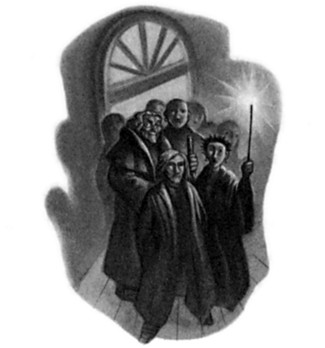
C H A P T E R T H R E E
THE ADVANCED GUARD
’ ve just been attacked by dementors and I might be expelled from I Hogwarts. I want to know what’s going on and when I’m going to get out of here.
Harry copied these words onto three separate pieces of parchment the moment he reached the desk in his dark bedroom. He addressed the first to Sirius, the second to Ron, and the third to Hermione. His owl, Hedwig, was off hunting; her cage stood empty on the desk.
Harry paced the bedroom waiting for her to come back, his head pounding, his brain too busy for sleep even though his eyes stung and itched with tiredness. His back ached from carrying Dudley home, and the two lumps on his head where the window and Dudley had hit him were throbbing painfully.
Up and down he paced, consumed with anger and frustration, grinding his teeth and clenching his fists, casting angry looks out at the empty, star-strewn sky every time he passed the window. Dementors sent to get him, Mrs. Figg and Mundungus Fletcher tailing him in secret, then suspension from Hogwarts and a hearing at the Ministry of Magic — and still no one was telling him what was going on.
42
THE ADVANCED GUARD
And what, what, had that Howler been about? Whose voice had echoed so horribly, so menacingly, through the kitchen?
Why was he still trapped here without information? Why was everyone treating him like some naughty kid? Don’t do any more magic, stay in the house. . . .
He kicked his school trunk as he passed it, but far from relieving his anger he felt worse, as he now had a sharp pain in his toe to deal with in addition to the pain in the rest of his body.
Just as he limped past the window, Hedwig soared through it with a soft rustle of wings like a small ghost.
“About time!” Harry snarled, as she landed lightly on top of her cage. “You can put that down, I’ve got work for you!”
Hedwig’s large round amber eyes gazed reproachfully at him over the dead frog clamped in her beak.
“Come here,” said Harry, picking up the three small rolls of parchment and a leather thong and tying the scrolls to her scaly leg. “Take these straight to Sirius, Ron, and Hermione and don’t come back here without good long replies. Keep pecking them till they’ve written decent-length answers if you’ve got to. Understand?”
Hedwig gave a muffled hooting noise, beak still full of frog.
“Get going, then,” said Harry.
She took off immediately. The moment she’d gone, Harry threw himself down onto his bed without undressing and stared at the dark ceiling. In addition to every other miserable feeling, he now felt guilty that he’d been irritable with Hedwig; she was the only friend he had at number four, Privet Drive. But he’d make it up to her when she came back with Sirius’s, Ron’s, and Hermione’s answers.
They were bound to write back quickly; they couldn’t possibly ignore a dementor attack. He’d probably wake up tomorrow to three fat letters full of sympathy and plans for his immediate removal to the Burrow. And with that comforting idea, sleep rolled over him, stifling all further thought.
43
CHAPTER THREE
But Hedwig didn’t return next morning. Harry spent the day in his bedroom, leaving it only to go to the bathroom. Three times that day Aunt Petunia shoved food into his room through the cat flap Uncle Vernon had installed three summers ago. Every time Harry heard her approaching he tried to question her about the Howler, but he might as well have interrogated the doorknob for all the answers he got.
Otherwise the Dursleys kept well clear of his bedroom. Harry couldn’t see the point of forcing his company on them; another row would achieve nothing except perhaps making him so angry he’d perform more illegal magic.
So it went on for three whole days. Harry was filled alternately with restless energy that made him unable to settle to anything, during which he paced his bedroom again, furious at the whole lot of them for leaving him to stew in this mess, and with a lethargy so complete that he could lie on his bed for an hour at a time, staring dazedly into space, aching with dread at the thought of the Ministry hearing.
What if they ruled against him? What if he was expelled and his wand was snapped in half? What would he do, where would he go?
He could not return to living full-time with the Dursleys, not now that he knew the other world, the one to which he really belonged.
. . . Was it possible that he might be able to move into Sirius’s house, as Sirius had suggested a year ago, before he had been forced to flee from the Ministry himself? Would he be allowed to live there alone, given that he was still underage? Or would the matter of where he went next be decided for him; had his breach of the International Statute of Secrecy been severe enough to land him in a cell in Azkaban? Whenever this thought occurred, Harry invariably slid off his bed and began pacing again.
On the fourth night after Hedwig’s departure Harry was lying in one of his apathetic phases, staring at the ceiling, his exhausted mind
44
THE ADVANCED GUARD
quite blank, when his uncle entered his bedroom. Harry looked slowly around at him. Uncle Vernon was wearing his best suit and an expression of enormous smugness.
“We’re going out,” he said.
“Sorry?”
“We — that is to say, your aunt, Dudley, and I — are going out.”
“Fine,” said Harry dully, looking back at the ceiling.
“You are not to leave your bedroom while we are away.”
“Okay.”
“You are not to touch the television, the stereo, or any of our possessions.”
“Right.”
“You are not to steal food from the fridge.”
“Okay.”
“I am going to lock your door.”
“You do that.”
Uncle Vernon glared at Harry, clearly suspicious of this lack of argument, then stomped out of the room and closed the door behind him. Harry heard the key turn in the lock and Uncle Vernon’s footsteps walking heavily down the stairs. A few minutes later he heard the slamming of car doors, the rumble of an engine, and the unmistakable sound of the car sweeping out of the drive.
Harry had no particular feeling about the Dursleys leaving. It made no difference to him whether they were in the house or not. He could not even summon the energy to get up and turn on his bedroom light.
The room grew steadily darker around him as he lay listening to the night sounds through the window he kept open all the time, waiting for the blessed moment when Hedwig returned.
The empty house creaked around him. The pipes gurgled. Harry lay there in a kind of stupor, thinking of nothing, suspended in misery.
And then, quite distinctly, he heard a crash in the kitchen below.
45
CHAPTER THREE
He sat bolt upright, listening intently. The Dursleys couldn’t be back, it was much too soon, and in any case he hadn’t heard their car.
There was silence for a few seconds, and then he heard voices.
Burglars, he thought, sliding off the bed onto his feet — but a split second later it occurred to him that burglars would keep their voices down, and whoever was moving around in the kitchen was certainly not troubling to do so.
He snatched up his wand from his bedside table and stood facing his bedroom door, listening with all his might. Next moment he jumped as the lock gave a loud click and his door swung open.
Harry stood motionless, staring through the open door at the dark upstairs landing, straining his ears for further sounds, but none came.
He hesitated for a moment and then moved swiftly and silently out of his room to the head of the stairs.
His heart shot upward into his throat. There were people standing in the shadowy hall below, silhouetted against the streetlight glowing through the glass door; eight or nine of them, all, as far as he could see, looking up at him.
“Lower your wand, boy, before you take someone’s eye out,” said a low, growling voice.
Harry’s heart was thumping uncontrollably. He knew that voice, but he did not lower his wand.
“Professor Moody?” he said uncertainly.
“I don’t know so much about ‘Professor,’ ” growled the voice, “never got round to much teaching, did I? Get down here, we want to see you properly.”
Harry lowered his wand slightly but did not relax his grip on it, nor did he move. He had very good reason to be suspicious. He had recently spent nine months in what he had thought was Mad-Eye Moody’s company only to find out that it wasn’t Moody at all, but an impostor; an impostor, moreover, who had tried to kill Harry before
46
THE ADVANCED GUARD
being unmasked. But before he could make a decision about what to do next, a second, slightly hoarse voice floated upstairs.
“It’s all right, Harry. We’ve come to take you away.”
Harry’s heart leapt. He knew that voice too, though he hadn’t heard it for more than a year.
“P-Professor Lupin?” he said disbelievingly. “Is that you?”
“Why are we all standing in the dark?” said a third voice, this one completely unfamiliar, a woman’s. “Lumos. ”
A wand tip flared, illuminating the hall with magical light. Harry blinked. The people below were crowded around the foot of the stairs, gazing intently up at him, some craning their heads for a better look.
Remus Lupin stood nearest to him. Though still quite young, Lupin looked tired and rather ill; he had more gray hair than when Harry had said good-bye to him, and his robes were more patched and shabbier than ever. Nevertheless, he was smiling broadly at Harry, who tried to smile back through his shock.
“Oooh, he looks just like I thought he would,” said the witch who was holding her lit wand aloft. She looked the youngest there; she had a pale heart-shaped face, dark twinkling eyes, and short spiky hair that was a violent shade of violet. “Wotcher, Harry!”
“Yeah, I see what you mean, Remus,” said a bald black wizard standing farthest back; he had a deep, slow voice and wore a single gold hoop in his ear. “He looks exactly like James.”
“Except the eyes,” said a wheezy-voiced, silver-haired wizard at the back. “Lily’s eyes.”
Mad-Eye Moody, who had long grizzled gray hair and a large chunk missing from his nose, was squinting suspiciously at Harry through his mismatched eyes. One of the eyes was small, dark, and beady, the other large, round, and electric blue — the magical eye that could see through walls, doors, and the back of Moody’s own head.
“Are you quite sure it’s him, Lupin?” he growled. “It’d be a nice
47
CHAPTER THREE
lookout if we bring back some Death Eater impersonating him. We ought to ask him something only the real Potter would know. Unless anyone brought any Veritaserum?”
“Harry, what form does your Patronus take?” said Lupin.
“A stag,” said Harry nervously.
“That’s him, Mad-Eye,” said Lupin.
Harry descended the stairs, very conscious of everybody still staring at him, stowing his wand into the back pocket of his jeans as he came.
“Don’t put your wand there, boy!” roared Moody. “What if it ignited? Better wizards than you have lost buttocks, you know!”
“Who d’you know who’s lost a buttock?” the violet-haired woman asked Mad-Eye interestedly.
“Never you mind, you just keep your wand out of your back pocket!” growled Mad-Eye. “Elementary wand safety, nobody bothers about it anymore. . . .” He stumped off toward the kitchen. “And I saw that,” he added irritably, as the woman rolled her eyes at the ceiling.
Lupin held out his hand and shook Harry’s.
“How are you?” he asked, looking at Harry closely.
“F-fine . . .”
Harry could hardly believe this was real. Four weeks with nothing, not the tiniest hint of a plan to remove him from Privet Drive, and suddenly a whole bunch of wizards was standing matter-of-factly in the house as though this were a long-standing arrangement. He glanced at the people surrounding Lupin; they were still gazing avidly at him. He felt very conscious of the fact that he had not combed his hair for four days.
“I’m — you’re really lucky the Dursleys are out . . .” he mumbled.
“Lucky, ha!” said the violet-haired woman. “It was me that lured them out of the way. Sent a letter by Muggle post telling them they’d been short-listed for the All-England Best-Kept Suburban Lawn Competition. They’re heading off to the prize-giving right now. . . .
Or they think they are.”
48
THE ADVANCED GUARD
Harry had a fleeting vision of Uncle Vernon’s face when he realized there was no All-England Best-Kept Suburban Lawn Competition.
“We are leaving, aren’t we?” he asked. “Soon?”
“Almost at once,” said Lupin, “we’re just waiting for the all-clear.”
“Where are we going? The Burrow?” Harry asked hopefully.
“Not the Burrow, no,” said Lupin, motioning Harry toward the kitchen; the little knot of wizards followed, all still eyeing Harry curiously. “Too risky. We’ve set up headquarters somewhere undetectable.
It’s taken a while. . . .”
Mad-Eye Moody was now sitting at the kitchen table swigging from a hip flask, his magical eye spinning in all directions, taking in the Dursleys’ many labor-saving appliances.
“This is Alastor Moody, Harry,” Lupin continued, pointing toward Moody.
“Yeah, I know,” said Harry uncomfortably; it felt odd to be introduced to somebody he’d thought he’d known for a year.
“And this is Nymphadora —”
“Don’t cal me Nymphadora, Remus,” said the young witch with a shudder. “It’s Tonks.”
“— Nymphadora Tonks, who prefers to be known by her surname only,” finished Lupin.
“So would you if your fool of a mother had called you ‘Nymphadora,’ ” muttered Tonks.
“And this is Kingsley Shacklebolt” — he indicated the tall black wizard, who bowed — “Elphias Doge” — the wheezy-voiced wizard nodded — “Dedalus Diggle —”
“We’ve met before,” squeaked the excitable Diggle, dropping his top hat.
“— Emmeline Vance” — a stately looking witch in an emerald-green shawl inclined her head — “Sturgis Podmore” — a square-jawed wizard with thick, straw-colored hair winked — “and Hestia Jones.” A pink-cheeked, black-haired witch waved from next to the toaster.
49
CHAPTER THREE
Harry inclined his head awkwardly at each of them as they were introduced. He wished they would look at something other than him; it was as though he had suddenly been ushered onstage. He also wondered why so many of them were there.
“A surprising number of people volunteered to come and get you,”
said Lupin, as though he had read Harry’s mind; the corners of his mouth twitched slightly.
“Yeah, well, the more the better,” said Moody darkly. “We’re your guard, Potter.”
“We’re just waiting for the signal to tell us it’s safe to set off,” said Lupin, glancing out of the kitchen window. “We’ve got about fifteen minutes.”
“Very clean, aren’t they, these Muggles?” said the witch called Tonks, who was looking around the kitchen with great interest. “My dad’s Muggle-born and he’s a right old slob. I suppose it varies, just like with wizards?”
“Er — yeah,” said Harry. “Look” — he turned back to Lupin —
“what’s going on, I haven’t heard anything from anyone, what’s Vol — ?”
Several of the witches and wizards made odd hissing noises; Dedalus Diggle dropped his hat again, and Moody growled, “Shut up!”
“What?” said Harry.
“We’re not discussing anything here, it’s too risky,” said Moody, turning his normal eye on Harry; his magical eye remained pointing up at the ceiling. “Damn it, ” he added angrily, putting a hand up to the magical eye, “it keeps sticking — ever since that scum wore it —”
And with a nasty squelching sound much like a plunger being pulled from a sink, he popped out his eye.
“Mad-Eye, you do know that’s disgusting, don’t you?” said Tonks conversationally.
“Get me a glass of water, would you, Harry?” asked Moody.
Harry crossed to the dishwasher, took out a clean glass, and filled it
50
THE ADVANCED GUARD
with water at the sink, still watched eagerly by the band of wizards.
Their relentless staring was starting to annoy him.
“Cheers,” said Moody, when Harry handed him the glass. He dropped the magical eyeball into the water and prodded it up and down; the eye whizzed around, staring at them all in turn. “I want three-hundred-and-sixty degrees visibility on the return journey.”
“How’re we getting — wherever we’re going?” Harry asked.
“Brooms,” said Lupin. “Only way. You’re too young to Apparate, they’ll be watching the Floo Network, and it’s more than our life’s worth to set up an unauthorized Portkey.”
“Remus says you’re a good flier,” said Kingsley Shacklebolt in his deep voice.
“He’s excellent,” said Lupin, who was checking his watch. “Anyway, you’d better go and get packed, Harry, we want to be ready to go when the signal comes.”
“I’ll come and help you,” said Tonks brightly.
She followed Harry back into the hall and up the stairs, looking around with much curiosity and interest.
“Funny place,” she said, “it’s a bit too clean, d’you know what I mean? Bit unnatural. Oh, this is better,” she added, as they entered Harry’s bedroom and he turned on the light.
His room was certainly much messier than the rest of the house.
Confined to it for four days in a very bad mood, Harry had not bothered tidying up after himself. Most of the books he owned were strewn over the floor where he’d tried to distract himself with each in turn and thrown it aside. Hedwig’s cage needed cleaning out and was starting to smell, and his trunk lay open, revealing a jumbled mixture of Muggle clothes and wizard’s robes that had spilled onto the floor around it.
Harry started picking up books and throwing them hastily into his trunk. Tonks paused at his open wardrobe to look critically at her reflection in the mirror on the inside of the door.
51
CHAPTER THREE
“You know, I don’t think purple’s really my color,” she said pensively, tugging at a lock of spiky hair. “D’you think it makes me look a bit peaky?”
“Er —” said Harry, looking up at her over the top of Quidditch Teams of Britain and Ireland.
“Yeah, it does,” said Tonks decisively. She screwed up her eyes in a strained expression as though she were struggling to remember something. A second later, her hair had turned bubble-gum pink.
“How did you do that?” said Harry, gaping at her as she opened her eyes again.
“I’m a Metamorphmagus,” she said, looking back at her reflection and turning her head so that she could see her hair from all directions.
“It means I can change my appearance at will,” she added, spotting Harry’s puzzled expression in the mirror behind her. “I was born one.
I got top marks in Concealment and Disguise during Auror training without any study at all, it was great.”
“You’re an Auror?” said Harry, impressed. Being a Dark wizard catcher was the only career he’d ever considered after Hogwarts.
“Yeah,” said Tonks, looking proud. “Kingsley is as well; he’s a bit higher up than I am, though. I only qualified a year ago. Nearly failed on Stealth and Tracking, I’m dead clumsy, did you hear me break that plate when we arrived downstairs?”
“Can you learn how to be a Metamorphmagus?” Harry asked her, straightening up, completely forgetting about packing.
Tonks chuckled.
“Bet you wouldn’t mind hiding that scar sometimes, eh?”
Her eyes found the lightning-shaped scar on Harry’s forehead.
“No, I wouldn’t mind,” Harry mumbled, turning away. He did not like people staring at his scar.
“Well, you’ll have to learn the hard way, I’m afraid,” said Tonks.
“Metamorphmagi are really rare, they’re born, not made. Most wizards need to use a wand or potions to change their appearance. . . .
52
THE ADVANCED GUARD
But we’ve got to get going, Harry, we’re supposed to be packing,” she added guiltily, looking around at all the mess on the floor.
“Oh — yeah,” said Harry, grabbing up a few more books.
“Don’t be stupid, it’ll be much quicker if I — pack!” cried Tonks, waving her wand in a long, sweeping movement over the floor.
Books, clothes, telescope, and scales all soared into the air and flew pell-mell into the trunk.
“It’s not very neat,” said Tonks, walking over to the trunk and looking down at the jumble inside. “My mum’s got this knack of getting stuff to fit itself in neatly — she even gets the socks to fold themselves — but I’ve never mastered how she does it — it’s a kind of flick —”
She flicked her wand hopefully; one of Harry’s socks gave a feeble sort of wiggle and flopped back on top of the mess within.
“Ah, well,” said Tonks, slamming the trunk’s lid shut, “at least it’s all in. That could do with a bit of cleaning, too — Scourgify —” She pointed her wand at Hedwig’s cage; a few feathers and droppings vanished. “Well, that’s a bit better — I’ve never quite got the hang of these sort of householdy spells. Right — got everything? Cauldron?
Broom? Wow! A Firebolt?”
Her eyes widened as they fell on the broomstick in Harry’s right hand. It was his pride and joy, a gift from Sirius, an international standard broomstick.
“And I’m still riding a Comet Two Sixty,” said Tonks enviously. “Ah well . . . wand still in your jeans? Both buttocks still on? Okay, let’s go.
Locomotor Trunk. ”
Harry’s trunk rose a few inches into the air. Holding her wand like a conductor’s baton, Tonks made it hover across the room and out of the door ahead of them, Hedwig’s cage in her left hand. Harry followed her down the stairs carrying his broomstick.
Back in the kitchen, Moody had replaced his eye, which was spinning so fast after its cleaning it made Harry feel sick. Kingsley
53
CHAPTER THREE
Shacklebolt and Sturgis Podmore were examining the microwave and Hestia Jones was laughing at a potato peeler she had come across while rummaging in the drawers. Lupin was sealing a letter addressed to the Dursleys.
“Excellent,” said Lupin, looking up as Tonks and Harry entered.
“We’ve got about a minute, I think. We should probably get out into the garden so we’re ready. Harry, I’ve left a letter telling your aunt and uncle not to worry —”
“They won’t,” said Harry.
“That you’re safe —”
“That’ll just depress them.”
“— and you’ll see them next summer.”
“Do I have to?”
Lupin smiled but made no answer.
“Come here, boy,” said Moody gruffly, beckoning Harry toward him with his wand. “I need to Disillusion you.”
“You need to what?” said Harry nervously.
“Disillusionment Charm,” said Moody, raising his wand. “Lupin says you’ve got an Invisibility Cloak, but it won’t stay on while we’re flying; this’ll disguise you better. Here you go —”
He rapped Harry hard on the top of the head and Harry felt a curious sensation as though Moody had just smashed an egg there; cold trickles seemed to be running down his body from the point the wand had struck.
“Nice one, Mad-Eye,” said Tonks appreciatively, staring at Harry’s midriff.
Harry looked down at his body, or rather, what had been his body, for it didn’t look anything like his anymore. It was not invisible; it had simply taken on the exact color and texture of the kitchen unit behind him. He seemed to have become a human chameleon.
“Come on,” said Moody, unlocking the back door with his wand.
They all stepped outside onto Uncle Vernon’s beautifully kept lawn.
54
THE ADVANCED GUARD
“Clear night,” grunted Moody, his magical eye scanning the heavens. “Could’ve done with a bit more cloud cover. Right, you,” he barked at Harry, “we’re going to be flying in close formation. Tonks’ll be right in front of you, keep close on her tail. Lupin’ll be covering you from below. I’m going to be behind you. The rest’ll be circling us.
We don’t break ranks for anything, got me? If one of us is killed —”
“Is that likely?” Harry asked apprehensively, but Moody ignored him.
“— the others keep flying, don’t stop, don’t break ranks. If they take out all of us and you survive, Harry, the rear guard are standing by to take over; keep flying east and they’ll join you.”
“Stop being so cheerful, Mad-Eye, he’ll think we’re not taking this seriously,” said Tonks, as she strapped Harry’s trunk and Hedwig’s cage into a harness hanging from her broom.
“I’m just telling the boy the plan,” growled Moody. “Our job’s to deliver him safely to headquarters and if we die in the attempt —”
“No one’s going to die,” said Kingsley Shacklebolt in his deep, calming voice.
“Mount your brooms, that’s the first signal!” said Lupin sharply, pointing into the sky.
Far, far above them, a shower of bright red sparks had flared among the stars. Harry recognized them at once as wand sparks. He swung his right leg over his Firebolt, gripped its handle tightly, and felt it vibrating very slightly, as though it was as keen as he was to be up in the air once more.
“Second signal, let’s go!” said Lupin loudly, as more sparks, green this time, exploded high above them.
Harry kicked off hard from the ground. The cool night air rushed through his hair as the neat square gardens of Privet Drive fell away, shrinking rapidly into a patchwork of dark greens and blacks, and every thought of the Ministry hearing was swept from his mind as though the rush of air had blown it out of his head. He felt as though
55
CHAPTER THREE
his heart was going to explode with pleasure; he was flying again, flying away from Privet Drive as he’d been fantasizing about all summer, he was going home. . . . For a few glorious moments, all his problems seemed to recede into nothing, insignificant in the vast, starry sky.
“Hard left, hard left, there’s a Muggle looking up!” shouted Moody from behind him. Tonks swerved and Harry followed her, watching his trunk swinging wildly beneath her broom. “We need more height.
. . . Give it another quarter of a mile!”
Harry’s eyes watered in the chill as they soared upward; he could see nothing below now but tiny pinpricks of light that were car headlights and streetlamps. Two of those tiny lights might belong to Uncle Vernon’s car. . . . The Dursleys would be heading back to their empty house right now, ful of rage about the nonexistent lawn competition
. . . and Harry laughed aloud at the thought, though his voice was drowned by the flapping of the others’ robes, the creaking of the harness holding his trunk and the cage, the whoosh of the wind in their ears as they sped through the air. He had not felt this alive in a month, or this happy. . . .
“Bearing south!” shouted Mad-Eye. “Town ahead!”
They soared right, so that they did not pass directly over the glittering spiderweb of lights below.
“Bear southeast and keep climbing, there’s some low cloud ahead we can lose ourselves in!” called Moody.
“We’re not going through clouds!” shouted Tonks angrily. “We’ll get soaked, Mad-Eye!”
Harry was relieved to hear her say this; his hands were growing numb on the Firebolt’s handle. He wished he had thought to put on a coat; he was starting to shiver.
They altered their course every now and then according to Mad-Eye’s instructions. Harry’s eyes were screwed up against the rush of icy wind that was starting to make his ears ache. He could remember being this cold on a broom only once before, during the Quidditch
56
THE ADVANCED GUARD
match against Hufflepuff in his third year, which had taken place in a storm. The guard around him was circling continuously like giant birds of prey. Harry lost track of time. He wondered how long they had been flying; it felt like an hour at least.
“Turning southwest!” yelled Moody. “We want to avoid the motorway!”
Harry was now so chilled that he thought longingly for a moment of the snug, dry interiors of the cars streaming along below, then, even more longingly, of traveling by Floo powder; it might be uncomfortable to spin around in fireplaces but it was at least warm in the flames.
. . . Kingsley Shacklebolt swooped around him, bald pate and earring gleaming slightly in the moonlight. . . . Now Emmeline Vance was on his right, her wand out, her head turning left and right . . . then she too swooped over him, to be replaced by Sturgis Podmore. . . .
“We ought to double back for a bit, just to make sure we’re not being followed!” Moody shouted.
“ARE YOU MAD, MAD-EYE?” Tonks screamed from the front.
“We’re all frozen to our brooms! If we keep going off course we’re not going to get there until next week! We’re nearly there now!”
“Time to start the descent!” came Lupin’s voice. “Follow Tonks, Harry!”
Harry followed Tonks into a dive. They were heading for the largest collection of lights he had yet seen, a huge, sprawling, crisscrossing mass, glittering in lines and grids, interspersed with patches of deepest black. Lower and lower they flew, until Harry could see individual headlights and streetlamps, chimneys, and television aerials. He wanted to reach the ground very much, though he felt sure that someone would have to unfreeze him from his broom.
“Here we go!” called Tonks, and a few seconds later she had landed.
Harry touched down right behind her and dismounted on a patch of unkempt grass in the middle of a small square. Tonks was already unbuckling Harry’s trunk. Shivering, Harry looked around. The grimy
57
CHAPTER THREE
fronts of the surrounding houses were not welcoming; some of them had broken windows, glimmering dully in the light from the streetlamps, paint was peeling from many of the doors, and heaps of rubbish lay outside several sets of front steps.
“Where are we?” Harry asked, but Lupin said quietly, “In a minute.”
Moody was rummaging in his cloak, his gnarled hands clumsy with cold.
“Got it,” he muttered, raising what looked like a silver cigarette lighter into the air and clicking it.
The nearest streetlamp went out with a pop. He clicked the unlighter again; the next lamp went out. He kept clicking until every lamp in the square was extinguished and the only light in the square came from curtained windows and the sickle moon overhead.
“Borrowed it from Dumbledore,” growled Moody, pocketing the Put-Outer. “That’ll take care of any Muggles looking out of the window, see? Now, come on, quick.”
He took Harry by the arm and led him from the patch of grass, across the road, and onto the pavement. Lupin and Tonks followed, carrying Harry’s trunk between them, the rest of the guard, all with their wands out, flanking them.
The muffled pounding of a stereo was coming from an upper window in the nearest house. A pungent smell of rotting rubbish came from the pile of bulging bin-bags just inside the broken gate.
“Here,” Moody muttered, thrusting a piece of parchment toward Harry’s Disillusioned hand and holding his lit wand close to it, so as to illuminate the writing. “Read quickly and memorize.”
Harry looked down at the piece of paper. The narrow handwriting was vaguely familiar. It said:
The headquarters of the Order of the Phoenix may be found at number twelve, Grimmauld Place, London.
58
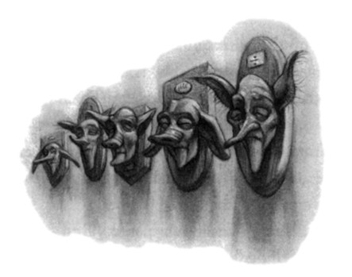
C H A P T E R F O U R
NUMBER TWELVE,
GRIMMAULD PLACE
hat’s the Order of the — ?” Harry began.
W “Not here, boy!” snarled Moody. “Wait till we’re inside!”
He pulled the piece of parchment out of Harry’s hand and set fire to it with his wand tip. As the message curled into flames and floated to the ground, Harry looked around at the houses again. They were standing outside number eleven; he looked to the left and saw number ten; to the right, however, was number thirteen.
“But where’s — ?”
“Think about what you’ve just memorized,” said Lupin quietly.
Harry thought, and no sooner had he reached the part about number twelve, Grimmauld Place, than a battered door emerged out of nowhere between numbers eleven and thirteen, followed swiftly by dirty walls and grimy windows. It was as though an extra house had inflated, pushing those on either side out of its way. Harry gaped at it.
The stereo in number eleven thudded on. Apparently the Muggles inside hadn’t even felt anything.
“Come on, hurry,” growled Moody, prodding Harry in the back.
59
CHAPTER FOUR
Harry walked up the worn stone steps, staring at the newly materialized door. Its black paint was shabby and scratched. The silver door knocker was in the form of a twisted serpent. There was no keyhole or letterbox.
Lupin pulled out his wand and tapped the door once. Harry heard many loud, metallic clicks and what sounded like the clatter of a chain. The door creaked open.
“Get in quick, Harry,” Lupin whispered. “But don’t go far inside and don’t touch anything.”
Harry stepped over the threshold into the almost total darkness of the hall. He could smell damp, dust, and a sweetish, rotting smell; the place had the feeling of a derelict building. He looked over his shoulder and saw the others filing in behind him, Lupin and Tonks carrying his trunk and Hedwig’s cage. Moody was standing on the top step and releasing the balls of light the Put-Outer had stolen from the streetlamps; they flew back to their bulbs and the square beyond glowed momentarily with orange light before Moody limped inside and closed the front door, so that the darkness in the hal became complete.
“Here —”
He rapped Harry hard over the head with his wand; Harry felt as though something hot was trickling down his back this time and knew that the Disillusionment Charm must have lifted.
“Now stay still, everyone, while I give us a bit of light in here,”
Moody whispered.
The others’ hushed voices were giving Harry an odd feeling of foreboding; it was as though they had just entered the house of a dying person. He heard a soft hissing noise and then old-fashioned gas lamps sputtered into life all along the walls, casting a flickering insubstantial light over the peeling wallpaper and threadbare carpet of a long, gloomy hallway, where a cobwebby chandelier glimmered overhead and age-blackened portraits hung crooked on the walls. Harry
60
NUMBER TWELVE,
GRIMMAULD PLACE
heard something scuttling behind the baseboard. Both the chandelier and the candelabra on a rickety table nearby were shaped like serpents.
There were hurried footsteps and Ron’s mother, Mrs. Weasley, emerged from a door at the far end of the hall. She was beaming in welcome as she hurried toward them, though Harry noticed that she was rather thinner and paler than she had been last time he had seen her.
“Oh, Harry, it’s lovely to see you!” she whispered, pulling him into a rib-cracking hug before holding him at arm’s length and examining him critically. “You’re looking peaky; you need feeding up, but you’ll have to wait a bit for dinner, I’m afraid. . . .”
She turned to the gang of wizards behind him and whispered urgently, “He’s just arrived, the meeting’s started. . . .”
The wizards behind Harry all made noises of interest and excitement and began filing past Harry toward the door through which Mrs. Weasley had just come; Harry made to follow Lupin, but Mrs.
Weasley held him back.
“No, Harry, the meeting’s only for members of the Order. Ron and Hermione are upstairs, you can wait with them until the meeting’s over and then we’ll have dinner. And keep your voice down in the hall,” she added in an urgent whisper.
“Why?”
“I don’t want to wake anything up.”
“What d’you — ?”
“I’ll explain later, I’ve got to hurry, I’m supposed to be at the meeting — I’ll just show you where you’re sleeping.”
Pressing her finger to her lips, she led him on tiptoes past a pair of long, moth-eaten curtains, behind which Harry supposed there must be another door, and after skirting a large umbrella stand that looked as though it had been made from a severed troll’s leg, they started up the dark staircase, passing a row of shrunken heads mounted on
61
CHAPTER FOUR
plaques on the wall. A closer look showed Harry that the heads belonged to house-elves. All of them had the same rather snoutlike nose.
Harry’s bewilderment deepened with every step he took. What on earth were they doing in a house that looked as though it belonged to the Darkest of wizards?
“Mrs. Weasley, why — ?”
“Ron and Hermione will explain everything, dear, I’ve really got to dash,” Mrs. Weasley whispered distractedly. “There” — they had reached the second landing — “you’re the door on the right. I’ll call you when it’s over.”
And she hurried off downstairs again.
Harry crossed the dingy landing, turned the bedroom doorknob, which was shaped like a serpent’s head, and opened the door.
He caught a brief glimpse of a gloomy high-ceilinged, twin-bedded room, then there was a loud twittering noise, followed by an even louder shriek, and his vision was completely obscured by a large quantity of very bushy hair — Hermione had thrown herself onto him in a hug that nearly knocked him flat, while Ron’s tiny owl, Pigwidgeon, zoomed excitedly round and round their heads.
“HARRY! Ron, he’s here, Harry’s here! We didn’t hear you arrive!
Oh, how are you? Are you all right? Have you been furious with us? I bet you have, I know our letters were useless — but we couldn’t tell you anything, Dumbledore made us swear we wouldn’t, oh, we’ve got so much to tel you, and you’ve got to tell us — the dementors! When we heard — and that Ministry hearing — it’s just outrageous, I’ve looked it all up, they can’t expel you, they just can’t, there’s provision in the Decree for the Restriction of Underage Sorcery for the use of magic in life-threatening situations —”
“Let him breathe, Hermione,” said Ron, grinning, closing the door behind Harry. He seemed to have grown several more inches during their month apart, making him taller and more gangly looking than ever, though the long nose, bright red hair, and freckles were the same.
62
NUMBER TWELVE,
GRIMMAULD PLACE
Hermione, still beaming, let go of Harry, but before she could say another word there was a soft whooshing sound and something white soared from the top of a dark wardrobe and landed gently on Harry’s shoulder.
“Hedwig!”
The snowy owl clicked her beak and nibbled his ear affectionately as Harry stroked her feathers.
“She’s been in a right state,” said Ron. “Pecked us half to death when she brought your last letters, look at this —”
He showed Harry the index finger of his right hand, which sported a half-healed but clearly deep cut.
“Oh yeah,” Harry said. “Sorry about that, but I wanted answers, you know. . . .”
“We wanted to give them to you, mate,” said Ron. “Hermione was going spare, she kept saying you’d do something stupid if you were stuck all on your own without news, but Dumbledore made us —”
“— swear not to tell me,” said Harry. “Yeah, Hermione’s already said.”
The warm glow that had flared inside him at the sight of his two best friends was extinguished as something icy flooded the pit of his stomach. All of a sudden — after yearning to see them for a solid month — he felt he would rather Ron and Hermione left him alone.
There was a strained silence in which Harry stroked Hedwig automatically, not looking at either of the others.
“He seemed to think it was best,” said Hermione rather breathlessly. “Dumbledore, I mean.”
“Right,” said Harry. He noticed that her hands too bore the marks of Hedwig’s beak and found that he was not at all sorry.
“I think he thought you were safest with the Muggles —” Ron began.
“Yeah?” said Harry, raising his eyebrows. “Have either of you been attacked by dementors this summer?”
63
CHAPTER FOUR
“Well, no — but that’s why he’s had people from the Order of the Phoenix tailing you all the time —”
Harry felt a great jolt in his guts as though he had just missed a step going downstairs. So everyone had known he was being followed except him.
“Didn’t work that well, though, did it?” said Harry, doing his utmost to keep his voice even. “Had to look after myself after all, didn’t I?”
“He was so angry,” said Hermione in an almost awestruck voice.
“Dumbledore. We saw him. When he found out Mundungus had left before his shift had ended. He was scary.”
“Well, I’m glad he left,” Harry said coldly. “If he hadn’t, I wouldn’t have done magic and Dumbledore would probably have left me at Privet Drive all summer.”
“Aren’t you . . . aren’t you worried about the Ministry of Magic hearing?” said Hermione quietly.
“No,” Harry lied defiantly. He walked away from them, looking around, with Hedwig nestled contentedly on his shoulder, but this room was not likely to raise his spirits. It was dank and dark. A blank stretch of canvas in an ornate picture frame was all that relieved the bareness of the peeling walls and as Harry passed it he thought he heard someone lurking out of sight snigger.
“So why’s Dumbledore been so keen to keep me in the dark?”
Harry asked, still trying hard to keep his voice casual. “Did you —
er — bother to ask him at all?”
He glanced up just in time to see them exchanging a look that told him he was behaving just as they had feared he would. It did nothing to improve his temper.
“We told Dumbledore we wanted to tel you what was going on,”
said Ron. “We did, mate. But he’s really busy now, we’ve only seen him twice since we came here and he didn’t have much time, he just
64
NUMBER TWELVE,
GRIMMAULD PLACE
made us swear not to tell you important stuff when we wrote, he said the owls might be intercepted —”
“He could still’ve kept me informed if he’d wanted to,” Harry said shortly. “You’re not telling me he doesn’t know ways to send messages without owls.”
Hermione glanced at Ron and then said, “I thought that too. But he didn’t want you to know anything. ”
“Maybe he thinks I can’t be trusted,” said Harry, watching their expressions.
“Don’t be thick,” said Ron, looking highly disconcerted.
“Or that I can’t take care of myself —”
“Of course he doesn’t think that!” said Hermione anxiously.
“So how come I have to stay at the Dursleys’ while you two get to join in everything that’s going on here?” said Harry, the words tumbling over one another in a rush, his voice growing louder with every word. “How come you two are allowed to know everything that’s going on — ?”
“We’re not!” Ron interrupted. “Mum won’t let us near the meetings, she says we’re too young —”
But before he knew it, Harry was shouting.
“SO YOU HAVEN’T BEEN IN THE MEETINGS, BIG DEAL!
YOU’VE STILL BEEN HERE, HAVEN’T YOU? YOU’VE STILL
BEEN TOGETHER! ME, I’VE BEEN STUCK AT THE DURSLEYS’ FOR A MONTH! AND I’VE HANDLED MORE THAN
YOU TWO’VE EVER MANAGED AND DUMBLEDORE
KNOWS IT — WHO SAVED THE SORCERER’S STONE?
WHO GOT RID OF RIDDLE? WHO SAVED BOTH YOUR
SKINS FROM THE DEMENTORS?”
Every bitter and resentful thought that Harry had had in the past month was pouring out of him; his frustration at the lack of news, the hurt that they had all been together without him, his fury at being
65
CHAPTER FOUR
followed and not told about it: All the feelings he was half-ashamed of finally burst their boundaries. Hedwig took fright at the noise and soared off on top of the wardrobe again; Pigwidgeon twittered in alarm and zoomed even faster around their heads.
“WHO HAD TO GET PAST DRAGONS AND SPHINXES
AND EVERY OTHER FOUL THING LAST YEAR? WHO SAW
HIM COME BACK? WHO HAD TO ESCAPE FROM HIM? ME!”
Ron was standing there with his mouth half-open, clearly stunned and at a loss for anything to say, while Hermione looked on the verge of tears.
“BUT WHY SHOULD I KNOW WHAT’S GOING ON? WHY
SHOULD ANYONE BOTHER TO TELL ME WHAT’S BEEN
HAPPENING?”
“Harry, we wanted to tell you, we really did —” Hermione began.
“CAN’T’VE WANTED TO THAT MUCH, CAN YOU, OR
YOU’D HAVE SENT ME AN OWL, BUT DUMBLEDORE
MADE YOU SWEAR —”
“Well, he did —”
“FOUR WEEKS I’VE BEEN STUCK IN PRIVET DRIVE,
NICKING PAPERS OUT OF BINS TO TRY AND FIND OUT
WHAT’S BEEN GOING ON —”
“We wanted to —”
“I SUPPOSE YOU’VE BEEN HAVING A REAL LAUGH,
HAVEN’T YOU, ALL HOLED UP HERE TOGETHER —”
“No, honest —”
“Harry, we’re really sorry!” said Hermione desperately, her eyes now sparkling with tears. “You’re absolutely right, Harry — I’d be furious if it was me!”
Harry glared at her, still breathing deeply, then turned away from them again, pacing up and down. Hedwig hooted glumly from the top of the wardrobe. There was a long pause, broken only by the mournful creak of the floorboards below Harry’s feet.
66
NUMBER TWELVE,
GRIMMAULD PLACE
“What is this place anyway?” he shot at Ron and Hermione.
“Headquarters of the Order of the Phoenix,” said Ron at once.
“Is anyone going to bother telling me what the Order of the Phoenix — ?”
“It’s a secret society,” said Hermione quickly. “Dumbledore’s in charge, he founded it. It’s the people who fought against You-Know-Who last time.”
“Who’s in it?” said Harry, coming to a halt with his hands in his pockets.
“Quite a few people —”
“— we’ve met about twenty of them,” said Ron, “but we think there are more. . . .”
Harry glared at them.
“Well?” he demanded, looking from one to the other.
“Er,” said Ron. “Well what?”
“Voldemort!” said Harry furiously, and both Ron and Hermione winced. “What’s happening? What’s he up to? Where is he? What are we doing to stop him?”
“We’ve told you, the Order don’t let us in on their meetings,” said Hermione nervously. “So we don’t know the details — but we’ve got a general idea —” she added hastily, seeing the look on Harry’s face.
“Fred and George have invented Extendable Ears, see,” said Ron.
“They’re really useful.”
“Extendable — ?”
“Ears, yeah. Only we’ve had to stop using them lately because Mum found out and went berserk. Fred and George had to hide them all to stop Mum binning them. But we got a good bit of use out of them before Mum realized what was going on. We know some of the Order are following known Death Eaters, keeping tabs on them, you know —”
“— some of them are working on recruiting more people to the Order —” said Hermione.
67
CHAPTER FOUR
“— and some of them are standing guard over something,” said Ron. “They’re always talking about guard duty.”
“Couldn’t have been me, could it?” said Harry sarcastically.
“Oh yeah,” said Ron, with a look of dawning comprehension.
Harry snorted. He walked around the room again, looking anywhere but at Ron and Hermione. “So what have you two been doing, if you’re not allowed in meetings?” he demanded. “You said you’d been busy.”
“We have,” said Hermione quickly. “We’ve been decontaminating this house, it’s been empty for ages and stuff’s been breeding in here.
We’ve managed to clean out the kitchen, most of the bedrooms, and I think we’re doing the drawing room tomo — AARGH!”
With two loud cracks, Fred and George, Ron’s elder twin brothers, had materialized out of thin air in the middle of the room. Pigwidgeon twittered more wildly than ever and zoomed off to join Hedwig on top of the wardrobe.
“Stop doing that!” Hermione said weakly to the twins, who were as vividly red-haired as Ron, though stockier and slightly shorter.
“Hello, Harry,” said George, beaming at him. “We thought we heard your dulcet tones.”
“You don’t want to bottle up your anger like that, Harry, let it all out,” said Fred, also beaming. “There might be a couple of people fifty miles away who didn’t hear you.”
“You two passed your Apparation tests, then?” asked Harry grumpily.
“With distinction,” said Fred, who was holding what looked like a piece of very long, flesh-colored string.
“It would have taken you about thirty seconds longer to walk down the stairs,” said Ron.
“Time is Galleons, little brother,” said Fred. “Anyway, Harry, you’re interfering with reception. Extendable Ears,” he added in response to
68
NUMBER TWELVE,
GRIMMAULD PLACE
Harry’s raised eyebrows, holding up the string, which Harry now saw was trailing out onto the landing. “We’re trying to hear what’s going on downstairs.”
“You want to be careful,” said Ron, staring at the ear. “If Mum sees one of them again . . .”
“It’s worth the risk, that’s a major meeting they’re having,” said Fred.
The door opened and a long mane of red hair appeared.
“Oh hello, Harry!” said Ron’s younger sister, Ginny, brightly. “I thought I heard your voice.”
Turning to Fred and George she said, “It’s no go with the Extendable Ears, she’s gone and put an Imperturbable Charm on the kitchen door.”
“How d’you know?” said George, looking crestfallen.
“Tonks told me how to find out,” said Ginny. “You just chuck stuff at the door and if it can’t make contact the door’s been Imperturbed.
I’ve been flicking Dungbombs at it from the top of the stairs and they just soar away from it, so there’s no way the Extendable Ears will be able to get under the gap.”
Fred heaved a deep sigh. “Shame. I really fancied finding out what old Snape’s been up to.”
“Snape?” said Harry quickly. “Is he here?”
“Yeah,” said George, carefully closing the door and sitting down on one of the beds; Fred and Ginny followed. “Giving a report. Top secret.”
“Git,” said Fred idly.
“He’s on our side now,” said Hermione reprovingly.
Ron snorted. “Doesn’t stop him being a git. The way he looks at us when he sees us. . . .”
“Bill doesn’t like him either,” said Ginny, as though that settled the matter.
69
CHAPTER FOUR
Harry was not sure his anger had abated yet; but his thirst for information was now overcoming his urge to keep shouting. He sank onto the bed opposite the others.
“Is Bill here?” he asked. “I thought he was working in Egypt.”
“He applied for a desk job so he could come home and work for the Order,” said Fred. “He says he misses the tombs, but,” he smirked,
“there are compensations. . . .”
“What d’you mean?”
“Remember old Fleur Delacour?” said George. “She’s got a job at Gringotts to eemprove ’er Eeenglish —”
“— and Bill’s been giving her a lot of private lessons,” sniggered Fred.
“Charlie’s in the Order too,” said George, “but he’s still in Romania, Dumbledore wants as many foreign wizards brought in as possible, so Charlie’s trying to make contacts on his days off.”
“Couldn’t Percy do that?” Harry asked. The last he had heard, the third Weasley brother was working in the Department of International Magical Cooperation at the Ministry of Magic.
At these words all the Weasleys and Hermione exchanged darkly significant looks.
“Whatever you do, don’t mention Percy in front of Mum and Dad,” Ron told Harry in a tense voice.
“Why not?”
“Because every time Percy’s name’s mentioned, Dad breaks whatever he’s holding and Mum starts crying,” Fred said.
“It’s been awful,” said Ginny sadly.
“I think we’re well shut of him,” said George with an uncharacteristically ugly look on his face.
“What’s happened?” Harry said.
“Percy and Dad had a row,” said Fred. “I’ve never seen Dad row with anyone like that. It’s normally Mum who shouts. . . .”
“It was the first week back after term ended,” said Ron. “We were
70
NUMBER TWELVE,
GRIMMAULD PLACE
about to come and join the Order. Percy came home and told us he’d been promoted.”
“You’re kidding?” said Harry.
Though he knew perfectly well that Percy was highly ambitious, Harry’s impression was that Percy had not made a great success of his first job at the Ministry of Magic. Percy had committed the fairly large oversight of failing to notice that his boss was being controlled by Lord Voldemort (not that the Ministry had believed that — they all thought that Mr. Crouch had gone mad).
“Yeah, we were all surprised,” said George, “because Percy got into a load of trouble about Crouch, there was an inquiry and everything.
They said Percy ought to have realized Crouch was off his rocker and informed a superior. But you know Percy, Crouch left him in charge, he wasn’t going to complain. . . .”
“So how come they promoted him?”
“That’s exactly what we wondered,” said Ron, who seemed very keen to keep normal conversation going now that Harry had stopped yelling. “He came home really pleased with himself — even more pleased than usual if you can imagine that — and told Dad he’d been offered a position in Fudge’s own office. A really good one for someone only a year out of Hogwarts — Junior Assistant to the Minister.
He expected Dad to be all impressed, I think.”
“Only Dad wasn’t,” said Fred grimly.
“Why not?” said Harry.
“Well, apparently Fudge has been storming round the Ministry checking that nobody’s having any contact with Dumbledore,” said George.
“Dumbledore’s name’s mud with the Ministry these days, see,” said Fred. “They all think he’s just making trouble saying You-Know-Who’s back.”
“Dad says Fudge has made it clear that anyone who’s in league with Dumbledore can clear out their desks,” said George.
71
CHAPTER FOUR
“Trouble is, Fudge suspects Dad, he knows he’s friendly with Dumbledore, and he’s always thought Dad’s a bit of a weirdo because of his Muggle obsession —”
“But what’s this got to do with Percy?” asked Harry, confused.
“I’m coming to that. Dad reckons Fudge only wants Percy in his office because he wants to use him to spy on the family — and Dumbledore.”
Harry let out a low whistle.
“Bet Percy loved that.”
Ron laughed in a hollow sort of way.
“He went completely berserk. He said — well, he said loads of terrible stuff. He said he’s been having to struggle against Dad’s lousy reputation ever since he joined the Ministry and that Dad’s got no ambition and that’s why we’ve always been — you know — not had a lot of money, I mean —”
“What?” said Harry in disbelief, as Ginny made a noise like an angry cat.
“I know,” said Ron in a low voice. “And it got worse. He said Dad was an idiot to run around with Dumbledore, that Dumbledore was heading for big trouble and Dad was going to go down with him, and that he — Percy — knew where his loyalty lay and it was with the Ministry. And if Mum and Dad were going to become traitors to the Ministry he was going to make sure everyone knew he didn’t belong to our family anymore. And he packed his bags the same night and left. He’s living here in London now.”
Harry swore under his breath. He had always liked Percy least of Ron’s brothers, but he had never imagined he would say such things to Mr. Weasley.
“Mum’s been in a right state,” said Ron. “You know — crying and stuff. She came up to London to try and talk to Percy but he slammed the door in her face. I dunno what he does if he meets Dad at work —
ignores him, I s’pose.”
72
NUMBER TWELVE,
GRIMMAULD PLACE
“But Percy must know Voldemort’s back,” said Harry slowly. “He’s not stupid, he must know your mum and dad wouldn’t risk everything without proof —”
“Yeah, well, your name got dragged into the row,” said Ron, shooting Harry a furtive look. “Percy said the only evidence was your word and . . . I dunno . . . he didn’t think it was good enough.”
“Percy takes the Daily Prophet seriously,” said Hermione tartly, and the others all nodded.
“What are you talking about?” Harry asked, looking around at them all. They were all regarding him warily.
“Haven’t — haven’t you been getting the Daily Prophet?” Hermione asked nervously.
“Yeah, I have!” said Harry.
“Have you — er — been reading it thoroughly?” Hermione asked still more anxiously.
“Not cover to cover,” said Harry defensively. “If they were going to report anything about Voldemort it would be headline news, wouldn’t it!”
The others flinched at the sound of the name. Hermione hurried on, “Well, you’d need to read it cover to cover to pick it up, but they — um — they mention you a couple of times a week.”
“But I’d have seen —”
“Not if you’ve only been reading the front page, you wouldn’t,” said Hermione, shaking her head. “I’m not talking about big articles. They just slip you in, like you’re a standing joke.”
“What d’you — ?”
“It’s quite nasty, actually,” said Hermione in a voice of forced calm.
“They’re just building on Rita’s stuff.”
“But she’s not writing for them anymore, is she?”
“Oh no, she’s kept her promise — not that she’s got any choice,”
Hermione added with satisfaction. “But she laid the foundation for what they’re trying to do now.”
73
CHAPTER FOUR
“Which is what?” said Harry impatiently.
“Okay, you know she wrote that you were collapsing all over the place and saying your scar was hurting and all that?”
“Yeah,” said Harry, who was not likely to forget Rita Skeeter’s stories about him in a hurry.
“Well, they’re writing about you as though you’re this deluded, attention-seeking person who thinks he’s a great tragic hero or something,” said Hermione, very fast, as though it would be less unpleasant for Harry to hear these facts quickly. “They keep slipping in snide comments about you. If some far-fetched story appears they say something like ‘a tale worthy of Harry Potter’ and if anyone has a funny accident or anything it’s ‘let’s hope he hasn’t got a scar on his forehead or we’ll be asked to worship him next —’ ”
“I don’t want anyone to worship —” Harry began hotly.
“I know you don’t,” said Hermione quickly, looking frightened.
“I know, Harry. But you see what they’re doing? They want to turn you into someone nobody will believe. Fudge is behind it, I’ll bet anything. They want wizards on the street to think you’re just some stupid boy who’s a bit of a joke, who tells ridiculous tall stories because he loves being famous and wants to keep it going.”
“I didn’t ask — I didn’t want — Voldemort killed my parents!”
Harry spluttered. “I got famous because he murdered my family but couldn’t kill me! Who wants to be famous for that? Don’t they think I’d rather it’d never —”
“We know, Harry,” said Ginny earnestly.
“And of course, they didn’t report a word about the dementors attacking you,” said Hermione. “Someone’s told them to keep that quiet. That should’ve been a really big story, out-of-control dementors. They haven’t even reported that you broke the International Statute of Secrecy — we thought they would, it would tie in so well with this image of you as some stupid show-off — we think they’re
74
NUMBER TWELVE,
GRIMMAULD PLACE
biding their time until you’re expelled, then they’re really going to go to town — I mean, if you’re expelled, obviously,” she went on hastily,
“you really shouldn’t be, not if they abide by their own laws, there’s no case against you.”
They were back on the hearing and Harry did not want to think about it. He cast around for another change of subject, but was saved the necessity of finding one by the sound of footsteps coming up the stairs.
“Uh-oh.”
Fred gave the Extendable Ear a hearty tug; there was another loud crack and he and George vanished. Seconds later, Mrs. Weasley appeared in the bedroom doorway.
“The meeting’s over, you can come down and have dinner now, everyone’s dying to see you, Harry. And who’s left all those Dungbombs outside the kitchen door?”
“Crookshanks,” said Ginny unblushingly. “He loves playing with them.”
“Oh,” said Mrs. Weasley, “I thought it might have been Kreacher, he keeps doing odd things like that. Now don’t forget to keep your voices down in the hall. Ginny, your hands are filthy, what have you been doing? Go and wash them before dinner, please. . . .”
Ginny grimaced at the others and followed her mother out of the room, leaving Harry alone with Ron and Hermione again. Both of them were watching him apprehensively, as though they feared that he would start shouting again now that everyone else had gone. The sight of them looking so nervous made him feel slightly ashamed.
“Look . . .” he muttered, but Ron shook his head, and Hermione said quietly, “We knew you’d be angry, Harry, we really don’t blame you, but you’ve got to understand, we did try and persuade Dumbledore —”
“Yeah, I know,” said Harry grudgingly.
75
CHAPTER FOUR
He cast around for a topic to change the subject from Dumbledore — the very thought of him made Harry’s insides burn with anger again.
“Who’s Kreacher?” he asked.
“The house-elf who lives here,” said Ron. “Nutter. Never met one like him.”
Hermione frowned at Ron.
“He’s not a nutter, Ron —”
“His life’s ambition is to have his head cut off and stuck up on a plaque just like his mother,” said Ron irritably. “Is that normal, Hermione?”
“Wel — well, if he is a bit strange, it’s not his fault —”
Ron rolled his eyes at Harry.
“Hermione still hasn’t given up on spew —”
“It’s not ‘spew’!” said Hermione heatedly. “It’s the Society for the Promotion of Elfish Welfare, and it’s not just me, Dumbledore says we should be kind to Kreacher too —”
“Yeah, yeah,” said Ron. “C’mon, I’m starving.”
He led the way out of the door and onto the landing, but before they could descend the stairs — “Hold it!” Ron breathed, flinging out an arm to stop Harry and Hermione walking any farther. “They’re still in the hall, we might be able to hear something —”
The three of them looked cautiously over the banisters. The gloomy hallway below was packed with witches and wizards, including all of Harry’s guard. They were whispering excitedly together. In the very center of the group Harry saw the dark, greasy-haired head and prominent nose of his least favorite teacher at Hogwarts, Professor Snape.
Harry leaned farther over the banisters. He was very interested in what Snape was doing for the Order of the Phoenix. . . .
A thin piece of flesh-colored string descended in front of Harry’s eyes. Looking up he saw Fred and George on the landing above, cautiously lowering the Extendable Ear toward the dark knot of people
76
NUMBER TWELVE,
GRIMMAULD PLACE
below. A moment later, however, they began to move toward the front door and out of sight.
“Dammit,” Harry heard Fred whisper, as he hoisted the Extendable Ear back up again.
They heard the front door open and then close.
“Snape never eats here,” Ron told Harry quietly. “Thank God.
C’mon.”
“And don’t forget to keep your voice down in the hall, Harry,”
Hermione whispered.
As they passed the row of house-elf heads on the wall they saw Lupin, Mrs. Weasley, and Tonks at the front door, magically sealing its many locks and bolts behind those who had just left.
“We’re eating down in the kitchen,” Mrs. Weasley whispered, meeting them at the bottom of the stairs. “Harry, dear, if you’ll just tiptoe across the hall, it’s through this door here —”
CRASH.
“Tonks!” cried Mrs. Weasley exasperatedly, turning to look behind her.
“I’m sorry!” wailed Tonks, who was lying flat on the floor. “It’s that stupid umbrella stand, that’s the second time I’ve tripped over —”
But the rest of her words were drowned by a horrible, earsplitting, bloodcurdling screech.
The moth-eaten velvet curtains Harry had passed earlier had flown apart, but there was no door behind them. For a split second, Harry thought he was looking through a window, a window behind which an old woman in a black cap was screaming and screaming as though she was being tortured — then he realized it was simply a life-size portrait, but the most realistic, and the most unpleasant, he had ever seen in his life.
The old woman was drooling, her eyes were rolling, the yellowing skin of her face stretched taut as she screamed, and all along the hall behind them, the other portraits awoke and began to yell too, so that
77
CHAPTER FOUR
Harry actually screwed up his eyes at the noise and clapped his hands over his ears.
Lupin and Mrs. Weasley darted forward and tried to tug the curtains shut over the old woman, but they would not close and she screeched louder than ever, brandishing clawed hands as though trying to tear at their faces.
“Filth! Scum! By-products of dirt and vileness! Half-breeds, mutants, freaks, begone from this place! How dare you befoul the house of my fathers —”
Tonks apologized over and over again, at the same time dragging the huge, heavy troll’s leg back off the floor. Mrs. Weasley abandoned the attempt to close the curtains and hurried up and down the hall, Stunning all the other portraits with her wand. Then a man with long black hair came charging out of a door facing Harry.
“Shut up, you horrible old hag, shut UP!” he roared, seizing the curtain Mrs. Weasley had abandoned.
The old woman’s face blanched.
“Yoooou!” she howled, her eyes popping at the sight of the man.
“Blood traitor, abomination, shame of my flesh!”
“I said — shut — UP!” roared the man, and with a stupendous effort he and Lupin managed to force the curtains closed again.
The old woman’s screeches died and an echoing silence fell.
Panting slightly and sweeping his long dark hair out of his eyes, Harry’s godfather, Sirius, turned to face him.
“Hello, Harry,” he said grimly, “I see you’ve met my mother.”
78
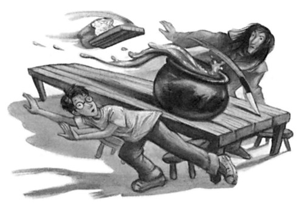
C H A P T E R F I V E
THE ORDER OF
THE PHOENIX
our — ?”
Y “My dear old mum, yeah,” said Sirius. “We’ve been trying to get her down for a month but we think she put a Permanent Sticking Charm on the back of the canvas. Let’s get downstairs, quick, before they all wake up again.”
“But what’s a portrait of your mother doing here?” Harry asked, bewildered, as they went through the door from the hall and led the way down a flight of narrow stone steps, the others just behind them.
“Hasn’t anyone told you? This was my parents’ house,” said Sirius.
“But I’m the last Black left, so it’s mine now. I offered it to Dumbledore for headquarters — about the only useful thing I’ve been able to do.”
Harry, who had expected a better welcome, noted how hard and bitter Sirius’s voice sounded. He followed his godfather to the bottom of the stairs and through a door leading into the basement kitchen.
It was scarcely less gloomy than the hall above, a cavernous room with rough stone walls. Most of the light was coming from a large fire at the far end of the room. A haze of pipe smoke hung in the air like battle fumes, through which loomed the menacing shapes of heavy
79
CHAPTER FIVE
iron pots and pans hanging from the dark ceiling. Many chairs had been crammed into the room for the meeting and a long wooden table stood in the middle of the room, littered with rolls of parchment, goblets, empty wine bottles, and a heap of what appeared to be rags. Mr.
Weasley and his eldest son, Bill, were talking quietly with their heads together at the end of the table.
Mrs. Weasley cleared her throat. Her husband, a thin, balding, red-haired man, who wore horn-rimmed glasses, looked around and jumped to his feet.
“Harry!” Mr. Weasley said, hurrying forward to greet him and shaking his hand vigorously. “Good to see you!”
Over his shoulder Harry saw Bill, who still wore his long hair in a ponytail, hastily rolling up the lengths of parchment left on the table.
“Journey all right, Harry?” Bill called, trying to gather up twelve scrolls at once. “Mad-Eye didn’t make you come via Greenland, then?”
“He tried,” said Tonks, striding over to help Bill and immediately sending a candle toppling onto the last piece of parchment. “Oh no — sorry —”
“Here, dear,” said Mrs. Weasley, sounding exasperated, and she repaired the parchment with a wave of her wand: In the flash of light caused by Mrs. Weasley’s charm, Harry caught a glimpse of what looked like the plan of a building.
Mrs. Weasley had seen him looking. She snatched the plan off the table and stuffed it into Bill’s heavily laden arms.
“This sort of thing ought to be cleared away promptly at the end of meetings,” she snapped before sweeping off toward an ancient dresser from which she started unloading dinner plates.
Bill took out his wand, muttered “Evanesco!” and the scrolls vanished.
“Sit down, Harry,” said Sirius. “You’ve met Mundungus, haven’t you?”
80
THE ORDER OF
THE PHOENIX
The thing Harry had taken to be a pile of rags gave a prolonged, grunting snore and then jerked awake.
“Some’n say m’ name?” Mundungus mumbled sleepily. “I ’gree with Sirius. . . .”
He raised a very grubby hand in the air as though voting, his droopy, bloodshot eyes unfocused. Ginny giggled.
“The meeting’s over, Dung,” said Sirius, as they all sat down around him at the table. “Harry’s arrived.”
“Eh?” said Mundungus, peering balefully at Harry through his matted ginger hair. “Blimey, so ’e ’as. Yeah . . . you all right, ’arry?”
“Yeah,” said Harry.
Mundungus fumbled nervously in his pockets, still staring at Harry, and pulled out a grimy black pipe. He stuck it in his mouth, ignited the end of it with his wand, and took a deep pull on it. Great billowing clouds of greenish smoke obscured him in seconds.
“Owe you a ’pology,” grunted a voice from the middle of the smelly cloud.
“For the last time, Mundungus,” called Mrs. Weasley, “will you please not smoke that thing in the kitchen, especially not when we’re about to eat!”
“Ah,” said Mundungus. “Right. Sorry, Molly.”
The cloud of smoke vanished as Mundungus stowed his pipe back in his pocket, but an acrid smell of burning socks lingered.
“And if you want dinner before midnight I’ll need a hand,” Mrs.
Weasley said to the room at large. “No, you can stay where you are, Harry dear, you’ve had a long journey —”
“What can I do, Molly?” said Tonks enthusiastically, bounding forward.
Mrs. Weasley hesitated, looking apprehensive.
“Er — no, it’s all right, Tonks, you have a rest too, you’ve done enough today —”
“No, no, I want to help!” said Tonks brightly, knocking over a chair
81
CHAPTER FIVE
as she hurried toward the dresser from which Ginny was collecting cutlery.
Table of contents
- Copyright
- Contents
- Dudley Demented · 1
- A Peck of Owls · 20
- The Advance Guard · 42
- Number Twelve, Grimmauld Place · 59
- The Order of the Phoenix · 79
- The Noble and Most Ancient House of Black · 98
- The Ministry of Magic · 121
- The Hearing · 137
- The Woes of Mrs. Weasley · 152
- Luna Lovegood · 179
- The Sorting Hat’s New Song · 200
- Professor Umbridge · 221
- Detention with Dolores · 250
- Percy and Padfoot · 279
- The Hogwarts High Inquisitor · 306
- In the Hog’s Head · 330
- Educational Decree Number Twenty-Four · 350
- Dumbledore’s Army · 374
- The Lion and the Serpent · 397
- Hagrid’s Tale · 420
- The Eye of the Snake · 441
- St. Mungo’s Hospital for Magical Maladies and Injuries · 466
- Christmas on the Closed Ward · 492
- Occlumency · 516
- The Beetle at Bay · 543
- Seen and Unforeseen · 570
- The Centaur and the Sneak · 599
- Snape’s Worst Memory · 624
- Career Advice · 651
- Grawp · 676
- O.W.L.s · 703
- Out of the Fire · 729
- Fight and Flight · 751
- The Department of Mysteries · 764
- Beyond the Veil · 781
- The Only One He Ever Feared · 807
- The Lost Prophecy · 820
- The Second War Begins · 845
- Credits